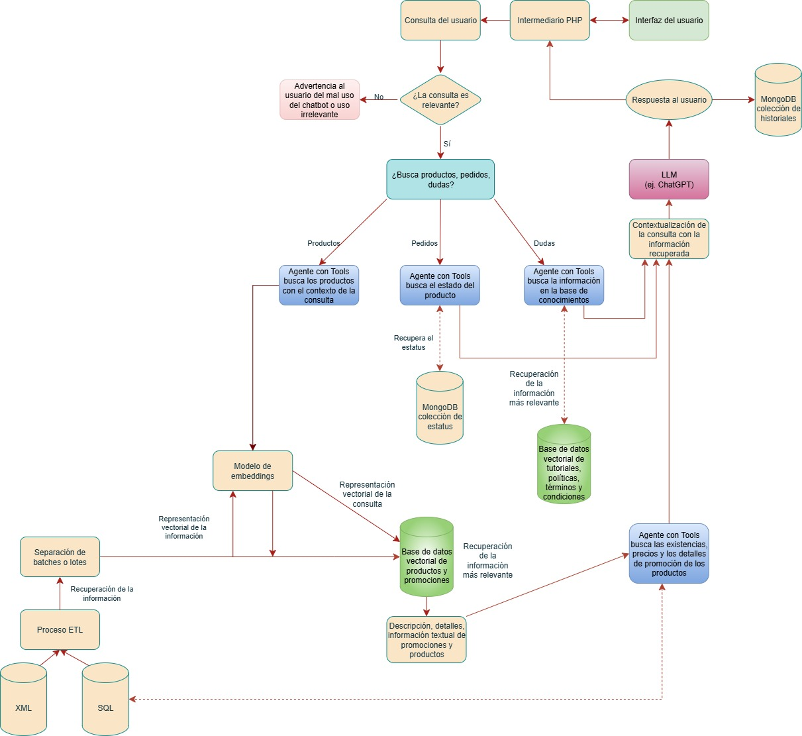
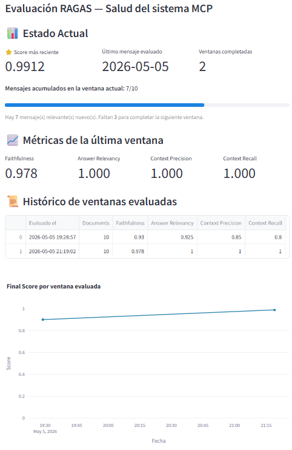
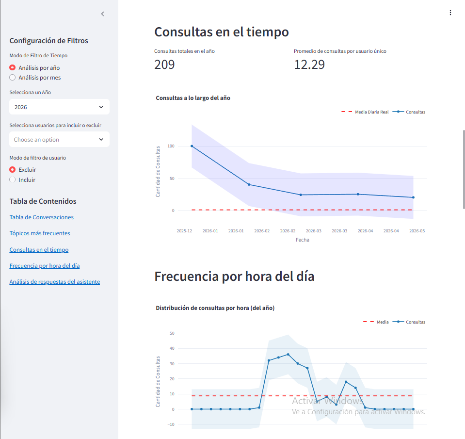

flowchart TD
A["MongoDB<br>message_backup<br>label=True"]-->|"últimas 10 respuestas"|B["fetch_last_messages"]
B --> C["EvaluationInput<br>question + answer<br>verbose_log + historial"]
C --> D["evaluate_single"]
D --> E1["Faithfulness<br>¿Inventó datos?"]
D --> E2["Answer Relevancy<br>¿Respondió bien?"]
D --> E3["Context Precision<br>¿Usó solo tools necesarias?"]
D --> E4["Context Recall<br>¿Todas las tools que debía llamar?"]
E1 --> F["LLM Evaluador<br>gpt-4.1"]
E2 --> F
E3 --> F
E4 --> F
F --> G["MetricScore<br>score 0 a 1<br>reasoning + details"]
G --> H["Score Final Ponderado<br>Faithfulness 0.40<br>Relevancy 0.35<br>Recall 0.125<br>Precision 0.125"]
H --> I{"MongoDB<br>disponible?"}
I -->|Si| J["evaluation_results<br>MongoDB"]
I -->|No| K["evaluation_results<br>eval_id.json<br>summary_ts.json"]
K --> L["Dashboard Streamlit<br>monitorización en vivo"]
J --> L
Documentación
1. Manual de instalación y despliegue.
1.1. Configuraciones importantes
- El proyecto está diseñado para ser desplegado en entornos Linux o Windows con Python 3.12.9. Requiere acceso a Ollama (para la ejecución de modelos open-source como
gemma3:12b), así como conectividad a una instancia de MongoDB y bases de datos MySQL. - La aplicación backend se expone a través de FastAPI en el puerto
8000. Es crucial asegurar que este puerto esté abierto y accesible en el entorno de despliegue. - Archivo
.envcon variables cargadas. - Todas las credenciales y configuraciones sensibles se gestionan mediante un archivo de variables de entorno (
.env), garantizando la seguridad y facilidad de configuración.
1.2. Requisitos del sistema
- Python: Versión 3.12.9.
- Pip: Última versión.
- UV: Última versión (gestor de paquetes y entornos).
- Ollama: Instalado y en ejecución en el servidor para el hosting de modelos open-source.
- MySQL: Acceso remoto configurado para la extracción de datos de productos y precios.
- Podman: Gestión y ejecución de los contenedores de los cuales depende la aplicación (MongoDB y Redis).
- MongoDB: Acceso remoto configurado para las colecciones de historial, productos, ofertas y fichas técnicas.
- Redis: Acceso a través de Podman para cachear preguntas y respuestas.
- Permisos
sudo: El usuario que ejecuta el servicio (angel.merino) requieresudosin password para operar los servicios systemd (systemctl restart chatbot-api, etc.) desde un cron no-interactivo. Esto se configura una sola vez con el archivo versionadodeploy/chatbot-api.sudoers, que se instala en/etc/sudoers.d/chatbot-apiy delimita el permiso únicamente a los comandos necesarios (ver sección 6.7 para los detalles). Sin este permiso, el flujo de despliegue continuo (CD) automatizado no puede reiniciar la API cuando cambian dependencias.
1.3. Dependencias principales del sistema
langchain: Framework principal para la construcción de cadenas RAG y la orquestación del flujo del chatbot.OpenAI: API de OpenAI con créditos para poder utilizar los modelos de LLM y Embeddings.tiktoken: Utilizado para el conteo preciso de tokens en las consultas y respuestas, fundamental para la estimación de costos.ollama: Herramienta para servir modelos de lenguaje open-source localmente, comogemma3:12b, permitiendo flexibilidad en la elección del LLM.pymongo: Driver Python para la interacción con MongoDB, utilizado para el almacenamiento y recuperación de sesiones de usuario, historial de mensajes, fichas técnicas, y datos de productos/ofertas.mysql-connector-python: Conector para MySQL, empleado para la extracción de datos de producto, sus detalles y precios desde la base de datos relacional.faiss-cpu: Biblioteca para la búsqueda eficiente de similitudes, crucial para la creación y consulta de la base de datos vectorial donde se almacenan los embeddings de productos.gunicorn: Servidor WSGI utilizado para desplegar la aplicación FastAPI en producción, gestionando la concurrencia y el rendimiento.podman: Herramienta de virtualización y contenedores sin daemon, utilizada para ejecutar la aplicación dentro de entornos aislados (containers) de manera similar a Docker, pero con mayor seguridad y compatibilidad con sistemas Linux. Facilita el despliegue reproducible de la aplicación y sus servicios asociados (como la base de datos o el servidor vectorial).- Otras dependencias: Todas las demás librerías requeridas se detallan en el archivo
pyproject.toml. La instalación de este archivo se detalla más adelante.
1.4. Instalación del backend (API)
1.4.1. Clonar el repositorio
git clone https://github.com/anmerino-pnd/proyectoCT
cd proyectoCT1.4.2. Crear un entorno virtual e instalar dependencias
Se recomienda usar uv por su eficiencia.
pip install uv # En caso de no estar instalado
uv venv
source .venv/bin/activate # Para Linux/macOS
# o `.venv\Scripts\activate` para Windows
uv pip install -e .1.4.3. Asegurarse de estar corriendo los programas necesarios en el ambiente
Verifica que el servicio de Ollama esté instalado y activo, y que el modelo gemma3:12b esté disponible.
curl -fsSL https://ollama.com/install.sh | sh # Para instalar Ollama
ollama serve
ollama list # Para verificar que el modelo gemma3:12b esté descargado y listo
ollama pull gemma3:12b # Correr esta línea en caso que el modelo no aparezcaConfigurar el servicio de Redis el cual se encarga del cache de la información.
mkdir -p ~/proyectoCT/datos/redis_data
chmod 700 ~/proyectoCT/datos/redis_data
# Crear un volumen para persistir los datos en cache
podman run -d \
--name redis-semantic \
-p 6380:6379 \
-v redis-data:/data \
--restart unless-stopped \
redis:latest redis-server --appendonly yes --save ""
#Nota: Se usa puerto **6380** en lugar de 6379 porque el puerto estándar ya está ocupado por el servicio Redis del sistema.
# Verificar que esté corriendo
podman ps -a
podman exec -it redis-semantic redis-cli ping # Debe responder PONG
podman logs redis-semantic
python3 -c "import redis; r = redis.Redis(host='localhost', port=6380); print(r.ping())"NOTA: En el caso que aparezca este error de Redis en los logs de las conversaciones:
Redis update failed: Command # 1 (HSET cebdab3b4c033ee7ada24b16b3fc09f0 0 {"lc": 1, "type":
"constructor", "id": ["langchain",...) of pipeline caused error: MISCONF Redis is configured to
save RDB snapshots, but it's currently unable to persist to disk. Commands that may modify the
data set are disabled, because this instance is configured to report errors during writes if RDB
snapshotting fails (stop-writes-on-bgsave-error option). Please check the Redis logs for details
about the RDB error.Seguir estos pasos:
# 1. Detener y eliminar el contenedor actual
podman stop redis-semantic
podman rm redis-semantic
# 2. Crear con volumen nombrado (Podman maneja permisos automáticamente)
podman run -d \
--name redis-semantic \
-p 6380:6379 \
-v redis-data:/data \
--restart unless-stopped \
redis:latest redis-server --appendonly yes --save ""
# 3. Verificar que esté corriendo
podman ps
# 4. Probar que funcione
podman exec -it redis-semantic redis-cli ping
podman exec -it redis-semantic redis-cli SET test "hello"
podman exec -it redis-semantic redis-cli GET test
# Verificar que se solucionó
# Ver logs (no debe haber errores de permisos)
podman logs redis-semantic
# Probar escritura
podman exec -it redis-semantic redis-cli
# Dentro de redis-cli:
SET mykey "test value"
GET mykey
BGSAVE # Forzar guardado en disco
exit
# Ver que no haya errores
podman logs redis-semantic | tail -20
podman exec -it redis-semantic redis-cli CONFIG GET save
# Debería arrojar esto :
# 1) "save"
# 2) ""Configurar la instancia de Mongo local que almacena las fichas técnicas de los productos.
# 1. Crear y levantar el contenedor MongoDB
podman run -d \
--name mongo-semantic \
-p 27017:27017 \
-v mongo-data:/data/db \
mongo:latest
# 2. Verificar que el contenedor esté corriendo
podman ps -a
# 3. Copiar el archivo JSON de las fichas técnicas al contenedor
podman cp ./datos/CT_API_Publica.tbl_mongo_collection_specifications.json mongo-semantic:/tmp/specs.json
# 4. Importar el JSON (esto crea automáticamente la BD y la colección)
podman exec -it mongo-semantic mongoimport \
--db CT_API_Publica \
--collection tbl_mongo_collection_specifications \
--file /tmp/specs.json \
--jsonArray
# 5. Conectar a MongoDB para verificar
podman exec -it mongo-semantic mongosh
# 6. Dentro de mongosh, verificar los datos:
use CT_API_Publica # Cambiar a la base de datos correcta
show collections # Ver las colecciones (debe aparecer tbl_mongo_collection_specifications)
db.tbl_mongo_collection_specifications.countDocuments() # Contar documentos
db.tbl_mongo_collection_specifications.findOne() # Ver un documento de ejemplo
exit # Salir de mongosh1.4.4. Configurar variables de entorno
Antes de levantar el backend, asegurarse de que el archivo .env en la raíz del proyecto contenga las siguientes variables con sus valores correctos.
# Conexión a la base de datos SQL
IP=
PORT=
USER=
PSSWD=
DB=
# Clave de la API de OpenAI para correr sus modelos
OPENAI_API_KEY=
# Configuración para el servicio de fichas técnicas
SUCURSALES_URL="" # Url de la sección de sucursales
RELOAD_VECTORS_POST= "https://localhost:8000/internal/reload_vectorstores"
URL='' # Url del servicio de fichas tecnicas
TOKEN_API=
TOKEN_CT=
CONTENT_TYPE=
COOKIE=
DOMINIO=
BOUNDARY=
# Conexión a MongoDB
MONGO_URI="mongodb://" # En la URI debe estar incrustrado el nombre de la DB
MONGO_DB=""
MONGO_COLLECTION_SESSIONS="tbl_sessions"
MONGO_COLLECTION_MESSAGE_BACKUP="tbl_message_backup"
MONGO_COLLECTION_PRODUCTS="tbl_productos"
MONGO_COLLECTION_SALES="tbl_ofertas"
MONGO_COLLECTION_SPECIFICATIONS="tbl_mongo_collection_specifications"
MONGO_COLLECTION_PEDIDOS="tbl_pedidos"
MONGO_URI_PROD="mongodb://"
MONGO_DB_PROD=""
MONGO_COLLECTION_PEDIDOS_PROD="tbl_pedidos"
# Conexión a Base de Datos Dev
IP_DEV=
PORT_DEV=
USER_DEV=
PWD_DEV=
DB_DEV=
# Redis
PODMAN_REDIS_URL=redis://localhost:6380
# Algolia
ALGOLIA_URL=
ALGOLIA_SORT_URL=
ALGOLIA_APP_ID=
ALGOLIA_API_KEY=
ALGOLIA_CONTENT_TYPE=1.4.5. Despliegue persistente con systemd
Nota: Para producción, se recomienda usar systemd en lugar de nohup, ya que garantiza que el servicio arranque automáticamente después de un reinicio del servidor.
El uso de nohup y & solo asegura que el proceso continúe ejecutándose en segundo plano si se cierra la sesión SSH, pero no garantiza que el servicio arranque automáticamente después de un reinicio del servidor. Para ambientes de producción o semi-producción se usa systemd.
El comando para levantar la API con Gunicorn es:
cd /home/angel.merino/proyectoCT
/home/angel.merino/proyectoCT/.venv/bin/python -m gunicorn ct.main:app \
--workers 4 \
--bind 0.0.0.0:8000 \
--certfile=/home/angel.merino/proyectoCT/static/ssl/cert.pem \
--keyfile=/home/angel.merino/proyectoCT/static/ssl/key.pem \
-k uvicorn.workers.UvicornWorker \
--timeout 120 \
--access-logfile - \
--error-logfile -Este comando es solo para prueba manual. En operación normal se usa systemd.
1.4.5.1. Verificación del entorno virtual
Para verificar que el entorno virtual está correctamente configurado:
cd /home/angel.merino/proyectoCT
ls -la .venv/bin | grep -E "streamlit|gunicorn|uvicorn|python"
.venv/bin/python --version
.venv/bin/python -m streamlit --version
.venv/bin/python -m gunicorn --version
.venv/bin/python -m uvicorn --version
find /home/angel.merino/proyectoCT -name "run_report.py"En el servidor actual se confirmó:
streamlitversión 1.45.0.gunicornversión 23.0.0.uvicornversión 0.34.0.- Python 3.13.1 dentro del virtualenv generado con
uv. - El script real del reporte está en:
/home/angel.merino/proyectoCT/src/ct/reportes/run_report.py.
1.4.5.2. Servicio systemd para Streamlit
Este servicio levanta el dashboard/reporte automatizado de Streamlit en el puerto 3000. Se usa python -m streamlit para evitar problemas al ejecutar directamente el script de entrada del virtualenv. Además se define PYTHONPATH para que el proyecto pueda resolver correctamente los módulos internos.
Para crear el archivo de servicio:
sudo nano /etc/systemd/system/streamlit-reporte.serviceContenido del archivo:
[Unit]
Description=Reporte de analisis con Streamlit
After=network-online.target
Wants=network-online.target
[Service]
User=angel.merino
Group=angel.merino
WorkingDirectory=/home/angel.merino/proyectoCT
Environment=HOME=/home/angel.merino
Environment=PATH=/home/angel.merino/proyectoCT/.venv/bin:/usr/local/sbin:/usr/local/bin:/usr/sbin:/usr/bin
Environment=PYTHONPATH=/home/angel.merino/proyectoCT/src:/home/angel.merino/proyectoCT
ExecStart=/home/angel.merino/proyectoCT/.venv/bin/python -m streamlit run /home/angel.merino/proyectoCT/src/ct/reportes/run_report.py --server.fileWatcherType none --server.port 3000 --server.address 0.0.0.0 --server.headless true
Restart=always
RestartSec=5
StandardOutput=journal
StandardError=journal
[Install]
WantedBy=multi-user.targetExplicación:
UseryGroup: ejecutan el servicio con el usuario propietario del proyecto.WorkingDirectory: raíz del proyecto.Environment=PATH: asegura que systemd use el virtualenv.Environment=PYTHONPATH: permite resolver imports internos comoct.ExecStart: comando real que levanta Streamlit.Restart=always: reinicia el servicio si falla.WantedBy=multi-user.target: habilita arranque automático en modo multiusuario.
1.4.5.3. Servicio systemd para backend/chatbot
Este servicio levanta la API FastAPI del chatbot mediante Gunicorn con workers Uvicorn, escuchando en 0.0.0.0:8000 y usando certificados SSL locales.
Para crear el archivo de servicio:
sudo nano /etc/systemd/system/chatbot-api.serviceContenido del archivo:
[Unit]
Description=Servidor chatbot FastAPI con Gunicorn y Uvicorn
After=network-online.target
Wants=network-online.target
[Service]
User=angel.merino
Group=angel.merino
WorkingDirectory=/home/angel.merino/proyectoCT
Environment=HOME=/home/angel.merino
Environment=PATH=/home/angel.merino/proyectoCT/.venv/bin:/usr/local/sbin:/usr/local/bin:/usr/sbin:/usr/bin
Environment=PYTHONPATH=/home/angel.merino/proyectoCT/src:/home/angel.merino/proyectoCT
ExecStart=/home/angel.merino/proyectoCT/.venv/bin/python -m gunicorn ct.main:app --workers 4 --bind 0.0.0.0:8000 --certfile=/home/angel.merino/proyectoCT/static/ssl/cert.pem --keyfile=/home/angel.merino/proyectoCT/static/ssl/key.pem -k uvicorn.workers.UvicornWorker --timeout 120 --access-logfile - --error-logfile -
Restart=always
RestartSec=5
StandardOutput=journal
StandardError=journal
[Install]
WantedBy=multi-user.targetExplicación: - Se usan rutas absolutas para cert.pem y key.pem porque los servicios systemd no siempre resuelven rutas relativas como una terminal interactiva.
1.4.5.4. Recargar, habilitar e iniciar servicios
Después de crear o modificar archivos .service, se debe recargar systemd:
sudo systemctl daemon-reloaddaemon-reload no reinicia el servidor ni reinicia las aplicaciones. Solo hace que systemd vuelva a leer los archivos de configuración ubicados en /etc/systemd/system/.
Verificación de la configuración:
sudo systemd-analyze verify /etc/systemd/system/streamlit-reporte.service
sudo systemd-analyze verify /etc/systemd/system/chatbot-api.servicePuede aparecer una advertencia como:
Accepting user/group name 'angel.merino', which does not match strict user/group name rules.Esto ocurre porque el usuario contiene un punto (angel.merino). En este caso systemd lo acepta y no representa un error fatal.
Habilitar al arranque:
sudo systemctl enable streamlit-reporte
sudo systemctl enable chatbot-apienable deja preparado el servicio para arrancar automáticamente en el próximo boot. No reinicia el servidor ni necesariamente arranca el servicio en ese momento.
Iniciar manualmente:
sudo systemctl start streamlit-reporte
sudo systemctl start chatbot-apiVerificar estado:
systemctl is-enabled streamlit-reporte
systemctl is-enabled chatbot-api
sudo systemctl status streamlit-reporte
sudo systemctl status chatbot-apiEl estado esperado es:
Active: active (running)Para salir de systemctl status, presionar q. Si accidentalmente se presiona Ctrl + Z, el proceso queda detenido en background. Se puede recuperar con:
fgy luego salir con q, o terminarlo con:
kill %11.4.5.5. Apertura persistente de puertos con firewalld
El servidor utiliza firewalld. Para que los puertos sigan abiertos después de reinicios se deben agregar con --permanent.
sudo firewall-cmd --state
sudo firewall-cmd --permanent --add-port=3000/tcp
sudo firewall-cmd --permanent --add-port=8000/tcp
sudo firewall-cmd --reload
sudo firewall-cmd --list-portsExplicación: - 3000/tcp corresponde al reporte Streamlit. - 8000/tcp corresponde al backend/chatbot. - --permanent guarda la regla para futuros reinicios. - --reload aplica la configuración permanente al firewall activo.
Verificación de arranque de firewalld:
systemctl is-enabled firewalld
sudo systemctl status firewalldNota: Si firewalld aparece como disabled, no habilitarlo sin validar con infraestructura/administración del servidor, ya que podría cambiar reglas activas de red en servidores productivos.
1.4.5.6. Consideraciones de SELinux
En el servidor se detectó SELinux en modo Enforcing:
getenforceResultado:
EnforcingAl iniciar los servicios inicialmente, fallaban con:
status=203/EXEC
Failed at step EXEC spawning /home/angel.merino/proyectoCT/.venv/bin/python: Permission deniedAunque ejecutar Python manualmente como el usuario sí funcionaba:
sudo -u angel.merino /home/angel.merino/proyectoCT/.venv/bin/python --versionEsto indicó que el bloqueo no era por permisos UNIX tradicionales, sino por contexto SELinux. El Python del virtualenv y el Python instalado por uv tenían contextos como:
user_home_t
data_home_tComandos de diagnóstico:
getenforce
ls -Z /home/angel.merino/proyectoCT/.venv/bin/python
readlink -f /home/angel.merino/proyectoCT/.venv/bin/python
ls -Z $(readlink -f /home/angel.merino/proyectoCT/.venv/bin/python)Comandos usados para permitir la ejecución desde systemd:
command -v semanage || sudo dnf install -y policycoreutils-python-utils
sudo semanage fcontext -a -t bin_t '/home/angel\.merino/proyectoCT/\.venv/bin(/.*)?' 2>/dev/null || sudo semanage fcontext -m -t bin_t '/home/angel\.merino/proyectoCT/\.venv/bin(/.*)?'
sudo semanage fcontext -a -t bin_t '/home/angel\.merino/\.local/share/uv/python/cpython-3\.13\.1-linux-x86_64-gnu/bin(/.*)?' 2>/dev/null || sudo semanage fcontext -m -t bin_t '/home/angel\.merino/\.local/share/uv/python/cpython-3\.13\.1-linux-x86_64-gnu/bin(/.*)?'
sudo semanage fcontext -a -t lib_t '/home/angel\.merino/\.local/share/uv/python/cpython-3\.13\.1-linux-x86_64-gnu/lib(/.*)?' 2>/dev/null || sudo semanage fcontext -m -t lib_t '/home/angel\.merino/\.local/share/uv/python/cpython-3\.13\.1-linux-x86_64-gnu/lib(/.*)?'
sudo restorecon -Rv /home/angel.merino/proyectoCT/.venv/bin
sudo restorecon -Rv /home/angel.merino/.local/share/uv/python/cpython-3.13.1-linux-x86_64-gnu/bin
sudo restorecon -Rv /home/angel.merino/.local/share/uv/python/cpython-3.13.1-linux-x86_64-gnu/libExplicación:
semanage fcontextregistra una regla persistente de contexto SELinux.restoreconaplica el contexto a los archivos existentes.- Se etiquetó
.venv/biny el Python real instalado poruv. - Esto corrigió el error
status=203/EXEC.
Importante: No se recomienda deshabilitar SELinux en servidores productivos. La solución correcta es ajustar contextos o políticas.
1.4.6. Regenerar el certificado SSL (si expira o es necesario)
Si el certificado SSL autofirmado ha expirado o necesitas uno nuevo:
openssl req -x509 -newkey rsa:2048 -nodes -keyout static/ssl/key.pem -out static/ssl/cert.pem -days 365Asegurarse de que los archivos cert.pem y key.pem estén en la ruta static/ssl dentro de tu proyecto.
1.4.7. Verificar logs
Los servicios configurados con systemd envían salida estándar y errores a journald, por lo que los logs se consultan con journalctl.
Para seguir logs en tiempo real:
journalctl -u streamlit-reporte -f
journalctl -u chatbot-api -fPara ver últimos logs sin quedarse en modo seguimiento:
journalctl -u streamlit-reporte -n 100 --no-pager
journalctl -u chatbot-api -n 100 --no-pagerPara ver logs desde el último arranque del sistema:
journalctl -u streamlit-reporte -b --no-pager
journalctl -u chatbot-api -b --no-pagerExplicación:
-ufiltra por unidad systemd.-fsigue logs en tiempo real.-n 100muestra las últimas 100 líneas.--no-pagerevita abrir el visor interactivo.-bmuestra logs desde el último boot.
nohup.out solo aplica si se decide ejecutar manualmente algún comando con nohup, pero ya no es la fuente principal de logs para el despliegue persistente.
1.4.8. Comandos útiles de operación diaria
| Acción | Comando |
|---|---|
| Ver estado de Streamlit | sudo systemctl status streamlit-reporte |
| Ver estado del backend/chatbot | sudo systemctl status chatbot-api |
| Iniciar Streamlit | sudo systemctl start streamlit-reporte |
| Iniciar backend/chatbot | sudo systemctl start chatbot-api |
| Detener Streamlit | sudo systemctl stop streamlit-reporte |
| Detener backend/chatbot | sudo systemctl stop chatbot-api |
| Reiniciar Streamlit | sudo systemctl restart streamlit-reporte |
| Reiniciar backend/chatbot | sudo systemctl restart chatbot-api |
| Habilitar Streamlit al arranque | sudo systemctl enable streamlit-reporte |
| Habilitar backend/chatbot al arranque | sudo systemctl enable chatbot-api |
| Deshabilitar Streamlit al arranque | sudo systemctl disable streamlit-reporte |
| Deshabilitar backend/chatbot al arranque | sudo systemctl disable chatbot-api |
| Ver si Streamlit está habilitado | systemctl is-enabled streamlit-reporte |
| Ver si backend/chatbot está habilitado | systemctl is-enabled chatbot-api |
| Recargar configuración de systemd | sudo systemctl daemon-reload |
| Ver logs en vivo de Streamlit | journalctl -u streamlit-reporte -f |
| Ver logs en vivo del backend/chatbot | journalctl -u chatbot-api -f |
| Ver últimos 100 logs de Streamlit | journalctl -u streamlit-reporte -n 100 --no-pager |
| Ver últimos 100 logs del backend/chatbot | journalctl -u chatbot-api -n 100 --no-pager |
| Ver puertos 3000 y 8000 escuchando | sudo ss -ltnp \| grep -E ':3000\|:8000' |
| Probar Streamlit localmente | curl -I http://127.0.0.1:3000 |
| Probar backend localmente con HTTPS | curl -k -I https://127.0.0.1:8000 |
| Ver puertos abiertos en firewalld | sudo firewall-cmd --list-ports |
| Abrir puerto 3000 permanentemente | sudo firewall-cmd --permanent --add-port=3000/tcp && sudo firewall-cmd --reload |
| Abrir puerto 8000 permanentemente | sudo firewall-cmd --permanent --add-port=8000/tcp && sudo firewall-cmd --reload |
| Ver estado de SELinux | getenforce |
| Ver contexto SELinux del Python del venv | ls -Z /home/angel.merino/proyectoCT/.venv/bin/python |
1.4.9. Verificación final del despliegue
Para validar que todo está configurado correctamente:
# Verificar que los servicios están habilitados
systemctl is-enabled streamlit-reporte
systemctl is-enabled chatbot-api
# Verificar estado de los servicios
sudo systemctl status streamlit-reporte
sudo systemctl status chatbot-api
# Verificar que los puertos están escuchando
sudo ss -ltnp | grep -E ':3000|:8000'
# Verificar que los puertos están abiertos en firewalld
sudo firewall-cmd --list-portsResultado esperado:
Servicios habilitados:
enabled
enabledServicios activos:
Active: active (running)Puertos escuchando:
0.0.0.0:3000
0.0.0.0:8000Puertos abiertos en firewalld:
3000/tcp 8000/tcpCon esto se valida que:
- Streamlit está activo en el puerto 3000.
- El backend/chatbot está activo en el puerto 8000.
- Ambos servicios están habilitados para iniciar después de un reinicio.
- Los puertos están abiertos de forma persistente.
- No es necesario mantener sesiones SSH abiertas.
- No es necesario usar
nohuppara operación normal.
1.5. Instalación del frontend (Widget)
Cargar archivos del widget: Los archivos del frontend (principalmente
sdk.jsy cualquier recurso gráfico comochat.png) deben ser cargados en el servidor donde reside el frontend de la página.Incrustar el widget en el HTML: Ejemplo de cómo se puede añadir el widget en la página web donde se desea que aparezca el chatbot.
<!DOCTYPE html>
<html lang="es">
<head>
<meta charset="UTF-8" />
<title>Prueba del Widget</title>
</head>
<body>
<script
src="sdk.js"
data-user-id="test"
data-user-key="2"
data-api-base="https://ctdev.ctonline.mx/chatbot"
data-chat-icon-url="chat.png"
type="text/javascript">
</script>
</body>
</html>Notas importantes para el data-api-base:
- Si la API corre en HTTP y el frontend en HTTPS, se enfrentarán problemas de “contenido mixto”. La solución propuesta fue usar un archivo PHP (backend del sitio web) como intermediario, el cual es crucial aquí. La API debe apuntar a este PHP y el PHP a su frontend donde se encuentra el widget.
- La
data-api-basees el dominio donde es accesible la API mediante PHP.
1.6. Actualización de la base de conocimientos (ETL)
Para asegurar que el chatbot tenga acceso a la información más reciente de productos, promociones y fichas técnicas, es necesario ejecutar periódicamente el pipeline ETL. Este proceso extrae, transforma y carga los datos, actualizando la base de datos vectorial utilizada por el sistema RAG.
Para ejecutar el pipeline ETL, sigue estos pasos:
- Acceder al entorno virtual: Asegurarse de estar en el directorio raíz del proyecto (
proyectoCT) y activar el entorno virtual donde se instalaron las dependencias del backend.
source .venv/bin/activate # Para Linux/macOS
# o `.venv/Scripts/activate` para Windows- Ejecutar el pipeline ETL: Una vez activado el entorno, puedes ejecutar una de las funciones que están dentro del script
pipeline.pydependiendo la necesidad.
En caso de cargar la base general de productos, correr este comando. Recomendación, correr cada 2 o 3 meses, ya que la información técnica cambia con poca frecuencia.
python3 -c "from ct.ETL.pipeline import load_products; load_products()"Consejo: si ya se tiene una base de datos vectorial de productos, agregar productos nuevos con el siguiente comando. Esto evita tener que extraer, transformar y cargar todos los productos, simplemente va agregando los faltantes.
python3 -c "from ct.ETL.pipeline import update_products; update_products()"En caso de cargar únicamente los productos en promoción, correr este comando. Eficiente para cada mes que hay productos nuevos en promoción.
python3 -c "from ct.ETL.pipeline import load_sales; load_sales()"Para cada promoción o promociones nuevas que fueron cargadas después del inicio del mes, este método busca promociones faltantes y los agrega a la base de datos.
python3 -c "from ct.ETL.pipeline import update_sales; update_sales()"Una vez que ya se tienen las dos bases vectoriales, es necesario combinarlos y cargarlos.
python3 -c "from ct.ETL.pipeline import load_sales_products; load_sales_products()"En caso de querer actualizar ambas al mismo tiempo, correr este comando. Esto elimina productos antiguos que sean innecesarios almacenar.
python3 -c "from ct.ETL.pipeline import update_all; update_all()"- Crontab del ETL (recomendación opcional): Se recomienda automatizar la ejecución de este pipeline (por ejemplo, cada hora entre las 8:30 a 18:30) para mantener actualizada la base de conocimientos del chatbot.
En sistemas Linux, esto se puede realizar fácilmente mediante un cron job y el archivo update_products.sh que:
- Ejecuta
src/ct/ETL/update_vector_stores.pyusando elpythondel virtualenv del proyecto. - Si detecta que el vector store fue regenerado, envía
SIGHUPal proceso master de Gunicorn para forzar la recarga de todos los workers. - Registra salida en
logs/update_products.log.
# Dar permisos de ejecución al archivo bash
chmod +x ~/proyectoCT/update_products.sh
# Probar manualmente
~/proyectoCT/update_products.sh
# Revisar el log
tail -n 200 ~/proyectoCT/logs/update_products.log
# Si no hubo fallas. Agregar la tarea al cron
crontab -e
# Añade la siguiente línea
15 7-18 * * 1-6 ~/proyectoCT/update_products.sh
# Verificar que se hizo correctamente con
crontab -l
# Cuando ya se haya ejecutado el flujo del cron, se puede revisar con
cat ~/proyectoCT/logs/update_products.logPara actualizar las ofertas, que cada mes se cargan, solo es necesario agregar la siguiente tarea:
chmod +x ~/proyectoCT/reload_sales.sh
~/proyectoCT/reload_sales.sh
crontab -e
# Cada 1° y 2° de cada mes se ejecuta la tarea a las 9 en punto (Hermosillo)
20 7,8,9 1,2 * * ~/proyectoCT/reload_sales.sh
crontab -l
cat ~/proyectoCT/logs/reload_sales.logPara agregar ofertas que se vayan agregando a lo largo de la semana:
chmod +x ~/proyectoCT/update_sales.sh
~/proyectoCT/update_sales.sh
# Agregar la tarea
crontab -e
# A partir del 2 de cada mes hasta que acabe el mes, agrega promociones que se hayan subido después de la fecha inicial, de 10 a 7 pm (Hermosillo)
30 7-19 2-31 * 1-6 ~/proyectoCT/update_sales.sh
crontab -l
cat ~/proyectoCT/logs/update_sales.logComandos útiles de cron
| Acción | Comando |
|---|---|
| Ver tareas activas | crontab -l |
| Borrar todas las tareas | crontab -r |
| Insertar/editar tareas | I |
| Guardar las tareas | :wq |
| No hacer ningún cambio | :q! |
| Pausar una tarea | Editar y comentar la línea con # |
Cómo salir del editor
- En
nano->Ctrl + O,Enter, luegoCtrl + X - En
viovim->I, editar,Esc, luego:wqpara guardar o:q!para salir sin guardar
1.7. Descargas y configuraciones adicionales
Estas configuraciones son necesarias para que no hayan problemas dentro del sistema de conversaciones y el sistema de reportes automatizados.
python -m spacy download es_core_news_lg
python -m spacy download es_core_news_sm
python -c "import nltk; nltk.download('punkt')"1.8. Notas adicionales
- Problemas de caché: Es común que los navegadores almacenen versiones antiguas de archivos JS/CSS. Si la interfaz del widget no funciona correctamente después de una actualización, instruye a los usuarios a limpiar la caché de su navegador o a realizar un “hard refresh” (Ctrl+F5). Implementar una estrategia de versioning para los archivos del widget (ej.js?v=1.2.3) puede mitigar esto a futuro.
- Rotación de IP para fichas técnicas: El sistema está diseñado para manejar el bloqueo de IP del servicio de fichas técnicas. Se recomienda monitorear los logs de la extracción (
extraction.py) para identificar errores 403, lo que indicaría la necesidad de actualizar la IP en el servicio externo.
2. Documentación técnica del código
2.1. Estructura de carpetas y módulos
El proyecto sigue una estructura modular para facilitar la gestión y el mantenimiento. A continuación, se detalla el propósito de los módulos principales y algunas de sus funciones clave.
2.1.1. Agente
langchain/tool_agent.py
Este archivo contiene la lógica principal del agente conversacional, incluyendo la interacción con herramientas externas, gestión del historial de conversación, uso de MongoDB, y conexión con el modelo que se esté utilizando en el momento a través de LangChain y OpenAI.
Clases y funciones clave:
class ToolAgent:__init__:- Propósito: Inicializa el agente, configurando el modelo LLM, conectando a MongoDB para la persistencia de sesiones e historial, cargando el prompt principal del sistema y registrando las herramientas disponibles.
- Comportamiento:
- Establece
self.modela “gpt-4.1” (O cualquier modelo disponible en https://reference.langchain.com/python/langchain/models/). - Inicializa las conexiones a las colecciones de MongoDB (
sessions,message_backup). - Define
self.toolscomo una lista de objetosTool, que el agente puede invocar. Estas herramientas incluyensearch_information_tool,inventory_toolysales_rules_tool, entre otras. Cada una con su descripción y esquema de argumentos (args_schema) cuando aplica. self.graphse inicializa aNoney se construye bajo demanda.
- Establece
clear_session_history() -> bool:- Propósito: Limpia el historial de mensajes (
last_messages) para una sesión de usuario específica en la base de datos de MongoDB. - Parámetros:
session_id (str): El identificador único de la sesión cuyo historial se desea borrar.
- Retorna:
bool:Truesi la operación fue exitosa,Falseen caso de error. - Comportamiento: Actualiza el documento de la sesión en MongoDB, estableciendo
last_messagescomo una lista vacía. Maneja excepciones de PyMongo y otras.
- Propósito: Limpia el historial de mensajes (
ensure_session() -> dict:- Propósito: Garantiza que exista una entrada para la
sesion_iden la colecciónsessionsde MongoDB. Si no existe, la crea; si existe, actualiza la marca de tiempo de la última actividad. - Parámetros:
session_id (str): El identificador de la sesión.
- Retorna:
dict: El documento de la sesión actualizado o recién creado. - Comportamiento: Utiliza
update_onecon$setOnInserty$setpara manejar la lógica de upsert y actualización de actividad.
- Propósito: Garantiza que exista una entrada para la
build_graph():- Propósito: Construye el
agentede LangGraph, que es el componente principal que orquesta la interacción entre el LLM, las herramientas y el prompt. - Parámetros: Ninguno (usa atributos de la clase).
- Comportamiento:
- Crea un
ChatOpenAILLM con el modelo y la configuración de streaming. - Crea un agente de funciones de OpenAI (
create_openai_functions_agent) vinculando el LLM, las herramientas y el prompt. - Inicializa
self.executorcomo una instancia deAgentExecutor, configurándolo para serverbose=Falsey con unmax_iterationspara controlar la profundidad de la ejecución del agente.
- Crea un
- Propósito: Construye el
run():- Propósito: Ejecuta una consulta del usuario a través del agente, gestiona el historial de chat, recopila métricas y transmite la respuesta en tiempo real.
- Parámetros:
query (str): La pregunta del usuario.session_id (str): ID de la sesión del usuario.lista_precio (str): El nivel de lista de precios asociado al usuario, usado en el prompt del LLM.
- Retorna: La respuesta generada por el modelo en invocación asíncrona.
- Comportamiento:
- Recupera el historial completo de la sesión (
get_session_history). - Trunca el historial (
trim_messages) para ajustarse a la ventana de contexto del LLM, priorizando los mensajes más recientes. - Si el
graphno está construido, llama abuild_graph(). - Define los
inputspara elgraph, incluyendo laquery,chat_history,listaPrecioysession_id. - Utiliza
self.graph.ainvoke()para obtener la respuesta final en modo asíncrono y mandarla al usuario. - En el bloque
finally, calcula la duración y los metadatos de la interacción. - Persiste los mensajes del usuario y del asistente en las colecciones
sessionsymessage_backupde MongoDB.
- Recupera el historial completo de la sesión (
get_session_history() -> list[BaseMessage]:- Propósito: Recupera el historial de mensajes de una sesión específica desde MongoDB y lo convierte a objetos
BaseMessagede LangChain. - Parámetros:
session_id (str): El ID del usuario cuyo historial se desea recuperar.
- Retorna:
list[baseMessage]: Una lista de objetosHumanMessageyAIMessageque representan el historial de conversación. - Comportamiento: Consulta la colección
sessionsen MongoDB para elsession_iddado y mapea los mensajes almacenados a los tipos de mensaje de LangChain, guarda estos mensajes, luego los devuelve como el historial extraído y estructurado.
- Propósito: Recupera el historial de mensajes de una sesión específica desde MongoDB y lo convierte a objetos
add_message():- Propósito: Añade un nuevo mensaje (de usuario o asistente) al historial de
last_messagesde una sesión en MongoDB, manteniendo un tamaño fijo para optimizar el rendimiento. - Parámetros:
session_id (str): ID de la sesión.message_type (str): Tipo de mensaje, puede ser “human” o “assistant”.content (str): Contenido textual del mensaje.
- Comportamiento:
- Crea un diccionario
short_msgcon el tipo, contenido y timestamp. - Utiliza
$pushcon$each,$sorty$slicepara añadir el nuevo mensaje y truncar la listalast_messagesa los últimos 24 mensajes (configurable).
- Crea un diccionario
- Propósito: Añade un nuevo mensaje (de usuario o asistente) al historial de
add_message_backup()- Propósito: Guarda un respaldo completo de cada interacción (pregunta del usuario y respuesta completa del asistente) junto con métricas detalladas en la colección
message_backupde MongoDB para análisis posterior. - Parámetros:
session_id (str): ID de la sesión.question (str): La pregunta original del usuario.full_answer (str): La respuesta completa generada por el asistente.metadata (dict): Diccionario con metadatos adicionales (tokens, costo, duración, modelo utilizado).
- Comportamiento: Inserta un nuevo documento en
message_backupcon toda la información relevante para análisis posterior.
- Propósito: Guarda un respaldo completo de cada interacción (pregunta del usuario y respuesta completa del asistente) junto con métricas detalladas en la colección
add_irrelevant_message()- Propósito: Guarda un mensaje etiquetado como “irrelevante” en la colección
message_backup. Esto es útil para el monitoreo y posible re-entrenamiento del clasificador. - Parámetros:
session_id (str): ID de la sesión.question (str): La pregunta del usuario clasificada como irrelevante.full_answer (str): La respuesta generada por el moderador para consultas irrelevantes.metadata (dict): Diccionario con metadatos adicionales (tokens, costo, duración, modelo utilizado).
- Comportamiento: Inserta un nuevo documento en
message_backupcon el campolabelestablecido enFalse.
- Propósito: Guarda un mensaje etiquetado como “irrelevante” en la colección
make_metadata() -> dict:- Propósito: Genera un diccionario con metadatos de la interacción, incluyendo información sobre el costo, los tokens utilizados y el tiempo de procesamiento.
- Parámetros:
token_cost_process (TokenCostProcess): Objeto que contiene información de los tokens.duration (float): Duración de la ejecución en segundos.
- Retorna:
dict: Diccionario con metadatos.
langchain/moderator_agent.py
Este módulo se encarga de clasificar las consultas del usuario (relevante, irrelevante, inapropiado) y de gestionar el comportamiento inapropiado, incluyendo la aplicación de sanciones temporales.
- Clases y funciones claves:
class QueryModerator:__init__(assistant : ToolAgent = None):- Propósito: Inicializa el
ToolAgentpara interactuar con la base de datos de sesiones y el LLM. - Parámetros:
assistant (ToolAgent): Instancia delToolAgentpara acceder a la gestión de sesiones en MongoDB.
- Propósito: Inicializa el
classify_query(query: str) -> str- Propósito: Clasifica la consulta del usuario como ‘relevante’, ‘irrelevante’ o ‘inapropiado’ utilizando un modelo de lenguaje.
- Parámetros:
query (str): La consulta de texto del usuario.
- Retorna: Un
strcon una de las clasificaciones relevante, irrelevante, o inapropiado. - Comportamiento:
- Utiliza
assistant.llm()con unsystem_promptpredefinido (_classification_prompt) para guiar la clasificación del modelo.
- Utiliza
_classification_prompt(self) -> str:- Propósito: Retorna el system prompt utilizado por el modelo de clasificación para categorizar las consultas del usuario.
- Parámetros: Ninguno.
- Retorna:
str: La cadena de texto del system prompt. - Comportamiento: Define las reglas y ejemplos para que el LLM clasifique las consultas en las tres categorías.
polite_answer(self) -> str:- Propósito: Devuelve una respuesta predefinida y amigable cuando la consulta del usuario es clasificada como ‘irrelevante’.
- Parámetros: Ninguno.
- Retorna:
str: Una cadena de texto con la respuesta cortés. - Comportamiento: No utiliza un modelo de lenguaje para garantizar rapidez y confiabilidad en la respuesta.
ban_answer(self) -> str:- Propósito: Devuelve una respuesta predefinida que advierte al usuario sobre el uso de lenguaje inapropiado y las posibles consecuencias.
- Parámetros: Ninguno.
- Retorna:
str: Una cadena de texto con el mensaje de advertencia. - Comportamiento: No utiliza un modelo de lenguaje para garantizar rapidez y control de tono.
evaluate_inappropriate_behavior(self, session: dict, query: str):- Propósito: Evalúa el comportamiento inapropiado del usuario, incrementa el contador de intentos y determina la duración de una posible sanción (baneo progresivo).
- Parámetros:
session (dict): El documento de la sesión del usuario, que contiene el historial de intentos inapropiados y el estado de baneo.query (str): La consulta inapropiada actual del usuario.- Retorna:
tuple[str, int, Optional[datetime]]: Una tupla que contiene:msg (str): El mensaje de sanción a mostrar al usuario.tries (int): El número actualizado de intentos inapropiados.banned_until (Optional[datetime]): La fecha y hora hasta la cual el usuario estará baneado (oNonesi es solo una advertencia).
- Comportamiento:
- Implementa una lógica de escalamiuento progresivo de sanciones (advertencia, 1 min, 3 min, 10 min, 1 hora, 1 día, 7 días) basada en el número de intentos.
- Reinicia el contador de intentos si ha pasado suficiente tiempo desde el último incidente.
check_if_banned(self, session: dict) -> Optional[str]:- Propósito: Verifica si el usuario asociado a una sesión está actualmente baneado. Si el baneo ha expirado, limpia el estado de baneo en la base de datos. Verifica si el usuario está actualmente baneado.
- Parámetros:
session (dict): El documento de la sesión del usuario.
- Retorna:
Optional[str]: Un mensaje de baneo si el usuario está actualmente restringido, oNonesi no está baneado o si el baneo ha expirado. - Comportamiento: Compara la fecha y hora actual con la fecha
banned_untilde la sesión. Si el baneo ha expirado, actualiza la sesión en MongoDB para eliminar el campobanned_until.
update_inappropriate_session(self, session, tries, banned_until):- Propósito: Actualiza los campos relacionados con el comportamiento inapropiado (
inappropiate_tries,last_inappropiate,banned_until) en el documento de la sesión del usuario en MongoDB. - Parámetros:
session_id (str): ID de la sesión.tries (int): El número de intentos inapropiados.banned_until (Optional[datetime]): La fecha y hora hasta la que el usuario está baneado (oNone).
- Comportamiento: Realiza una operación de
update_oneen la colecciónsessionspara establecer los campos especificados.
- Propósito: Actualiza los campos relacionados con el comportamiento inapropiado (
langchain/moderated_tool_agent.py
Este módulo orquesta el flujo completo de una consulta de usuario, incluyendo la moderación de contenido y la delegación de la consulta al agente principal de herramientas (ToolAgent) si es relevante.
- Clases y funciones claves:
class ModeratedToolAgent:__init__(self):- Propósito: Inicializa el
ModeratedToolAgent, creando instancias deToolAgentyQueryModeratory vinculándolos para coordinar el flujo de la conversación. - Comportamiento:
- Crea
self.tool_agentpara manejar la lógica principal del chatbot y la interración con herramientas. - Crea
self.moderatorpara la clasificación y gestión de comportamiento, pasándoleself.tool_agentpara que el moderador pueda actualizar el estado de la sesión.
- Crea
- Propósito: Inicializa el
run()- Propósito: Ejecuta el flujo completo de una consulta del usuario, desde la verificación de baneo y la clasificación, hasta la generación de la respuesta (relevante, irrelevante, inapropiado) y su streaming.
- Parámetros:
query (str): La consulta de texto del usuario.session_id (str): ID de la sesión del usuario.listaPrecio (str): El nivel de lista de precios asociado al usuario.
- Retorna:
AsyncGenerator[str, None]: Un generador asíncrono que cede fragmentos (chunks) de la respuesta final del chatbot. - Comportamiento:
- Asegura la existencia de la sesión (
tool_agent.ensure_session). - Verifica si el usuario está baneado (
moderator.check_if_banned). Si lo está, cede el mensaje de baneo y termina. - Clasifica la
query(moderator.classify_query). - Basado en la
labelde clasificación:- Si es relevante, delega la ejecución al
tool_agent.run()para obtener una respuesta detallada con herramientas. - Si es irrelevante, genera una respuesta cortés (
moderator.polite_answer()) y la registra. - Si es inapropiado, evalúa el comportamiento (
moderator.evaluate_inappropriate_behavior()), actualiza la sesión (moderator.update_inappropriate_session()) y cede el mensaje de sanción. - Si la clasificación no es reconocida, cede un mensaje de error genérico.
- Si es relevante, delega la ejecución al
- Asegura la existencia de la sesión (
2.1.2. Tools
Este módulo contiene las herramientas especializadas que el agente puede invocar. Se han ampliado para incluir búsquedas híbridas, análisis de datos en tiempo real y conexión con APIs externas como Algolia.
tools/search_information.py
Este módulo ha evolucionado para utilizar una estrategia de recuperación híbrida (Ensemble Retrieval), mejorando la precisión al combinar documentos de productos y promociones.
- Clases y funciones clave:
vectorstore():- Propósito: Carga el índice FAISS y configura dos retrievers independientes utilizando MMR (Maximal Marginal Relevance) para asegurar diversidad en los resultados.
- Retrievers:
retriever_productos: Filtra por la colección “productos” (k=8, lambda=0.85).retriever_promociones: Filtra por la colección “promociones” (k=10, lambda=0.85).
- EnsembleRetriever: Combina ambos recuperadores para permitir que el agente busque en ambas fuentes simultáneamente con una sola consulta.
search_information_tool():- Propósito: Herramienta principal de RAG. Invoca al ensemble_retriever y agrupa los resultados.
- Comportamiento: Utiliza la función auxiliar _group_docs_by_key para consolidar fragmentos de texto dispersos (descripción, ficha técnica, oferta) bajo una única clave de producto, proporcionando al LLM un contexto unificado.
search_by_key_tool():- Propósito: Permite una búsqueda directa y exacta por clave de producto (SKU) utilizando un índice en memoria (index_por_clave). Útil cuando el usuario menciona explícitamente un código.
tools/inventory.py
Este módulo define la herramienta inventory_tool, que permite al chatbot consultar la disponibilidad, precio y moneda de un producto específico en la base de datos MySQL.
- Clases y funciones clave:
class InventoryInput():- Propósito: Define el esquema de entrada (parámetros) para la herramienta
inventory_toolutilizando Pydantic, asegurando la validación de los datos. - Atributos:
clave (str): La clave única del producto a consultar.listaPrecio (int): El ID de la lista de precios a considerar para la consulta.
- Propósito: Define el esquema de entrada (parámetros) para la herramienta
inventory_tool() -> str:- Propósito: Define el esquema de entrada (parámetros) para la herramienta
inventory_toolutilizando Pydantic, asegurando la validación de los datos. - Atributos:
clave (str): La clave del producto.listaPrecio (int): El ID de la lista de precios.
- Retorna:
str: Una cadena de texto formateada con la información del producto (claave, precio original, moneda, existencias, si está en promoción) o un mensaje de promoción no encontrada. - Comportamiento:
- Construye una consulta SQL que une las tablas
productos,existencias,precioypromociones. - Se conecta a MySQL, ejecuta la consulta con los parámetros proporcionados.
- Formatea el resultado para indicar la moneda (MXN/USD) y el estado de promoción (si el producto en cuestión está o no en promoción).
- Incluye manejo de errores para problemas de conexión a la base de datos o errores inesperados.
- Construye una consulta SQL que une las tablas
- Propósito: Define el esquema de entrada (parámetros) para la herramienta
tools/sales_rules_tool.py
Este módulo define la herramienta sales_rules_tool, que permite al chatbot aplicar reglas de promoción y calcular el precio final de un producto, considerando la lista de precios y la sucursal del usuario.
- Clases y funciones clave:
SUCURSALES:- Propósito: Un diccionario global cargado desde un archivo JSON (
ID_SUCURSAL) que mapea nemónicos de sucursal a sus IDs.
- Propósito: Un diccionario global cargado desde un archivo JSON (
class SalesInput():- Propósito: Define el esquema de entrada (parámetros) para la herramienta
sales_rule_toolutilizando Pydantic. - Atributos:
clave (str): La clave única del producto en promoción.listaPrecio (int): El ID de la lista de precios a considerar.session_id (str): El ID de la sesión del usuario, utilizado para inferir la sucursal.
- Propósito: Define el esquema de entrada (parámetros) para la herramienta
get_id_sucursal() -> str:- Propósito: Extrae el ID de la sucursal a partir del
session_iddel usuario, utilizando patrones predefinidos (e.g., “XXCTIN” o nemónicos como “HMO”). - Parámetros:
session_id (str): El ID de la sesión del usuario.
- Retorna:
str: El ID de la sucursal como una cadena. - Comportamiento: Utiliza expresiones regulares para extraer el nemónico o ID de la sucursal del
session_idy lo busca en el diccionarioSUCURSALES. LanzaValueErrorsi no puede extraer o encontrar la sucursal.
- Propósito: Extrae el ID de la sucursal a partir del
query_sales():- Propósito: Retorna la consulta SQL para obtener los detalles de la promoción más relevante para un producto, lista de precios y sucursal específicos.
- Parámetros: Ninguno.
- Retorna:
str: La cadena de la consulta SQL. - Comportamiento: La consulta filtra por promociones activas, producto, lista de precios y sucursal, ordenando por fecha de inicio para obtener la promoción más reciente.
sales_rules_tool() -> str:- Propósito: Aplica las reglas de promoción para un producto dado, calculando el precio final y generando un mensaje descriptivo para el usuario.
- Parámetros:
clave (str): La clave del producto.listaPrecio (int): El ID de la lista de precios.session_id (str): El ID de la sesión del usuario.
- Retorna:
str: Una cadena de texto formateada que describe la promoción aplicada (precio, final, descuento, condiciones, vigencia) o un mensaje si el producto no está en promoción. - Comportamiento:
- Obtiene el
id_sucursalusandoobtener_id_sucursal(). - Se conecta a MySQL y ejecuta
query_sales()para obtener los detalles de la promoción. - Evalúa diferentes tipos de promociones (precio de oferta, descuento porcentual, “en compra de X recibe Y”).
- Calcula el
precio_finaly construye un mensaje descriptivo. - Maneja casos donde la promoción no está vigente o el producto no se encuentra en promoción.
- Incluye manejo de errores para problemas de base de datos o errores inesperados.
- Obtiene el
tools/algolia.py
Integra el motor de búsqueda de Algolia para consultas comerciales precisas, filtrado por existencias y precios personalizados según el cliente.
- Clases y funciones clave:
class AlgoliaInput: Define los parámetros de búsqueda, incluyendo si se desea el “precio más bajo” (lowest_price)._create_scraper(user_token): Configura una instancia de cloudscraper para interactuar con la API de Algolia, manejando los headers de autenticación.algolia_search_tool:Lógica de Negocio:
Identifica al usuario (Cliente CT o Vendedor) para aplicar filtros de seguridad.
Filtros HP: Ejecuta una consulta SQL especial para verificar si el cliente tiene restricciones o permisos especiales para ver productos de la marca HP (especial_hp).
Consulta: Envía la petición a Algolia aplicando filtros de existencia_sucursal y reglas de contexto.
Retorna: Un JSON codificado con los hits encontrados, incluyendo precio (validado por lista de precios), moneda, existencias en sucursal local vs global y estado de promoción.
tools/support.py
Herramienta diseñada para responder dudas sobre procesos, garantías y políticas internas, utilizando una base vectorial FAISS independiente.
Clases y funciones clave:
SupportInput:- Define el esquema de entrada, obligando al agente a categorizar la consulta en filtros predefinidos (
SupportFilter): ‘Compra en línea’, ‘ESD’, ‘Terminos…’, ‘Procedimientos Garantía’, ‘PartnerCT’, ‘Directorio PM’.
- Define el esquema de entrada, obligando al agente a categorizar la consulta en filtros predefinidos (
get_support_info(query, filters):- Propósito: Recupera información institucional.
- Comportamiento:
- Crea un retriever dinámico filtrando por la colección seleccionada (ej. solo buscar en “Garantías”).
- Si el filtro es ‘Directorio PM’, formatea la respuesta para incluir datos de contacto específicos (correo, Teams, extensión) de los Product Managers.
- Si no, devuelve el contenido textual de las políticas relevantes.
tools/status.py
Este módulo define la herramienta status_tool, que permite al chatbot obtener el estado actual de un pedido a través de su número de factura.
- Clases y funciones clave:
class StatusInput:- Propósito: Modelo de datos Pydantic para validar y describir el argumento de entrada
facturarequerido por la herramienta. - Comportamiento: Asegura que el número de factura sea una cadena de texto.
- Propósito: Modelo de datos Pydantic para validar y describir el argumento de entrada
status_tool(factura: str) -> str:- Propósito: Consulta una base de datos de MongoDB para encontrar el estado de un pedido específico usando su número de factura.
- Validación: Verifica si el usuario es un cliente externo (solo puede ver sus pedidos) o interno (puede ver cualquier pedido).
- Parámetros:
factura(str): El número de factura del pedido. - Retorna:
str: Una descripción textual del estado del pedido (ej. “Pedido entregado al domicilio”, “Pedido en generación”). - Comportamiento:
- Conecta a la base de datos de MongoDB. Realiza una consulta para encontrar el documentos del pedido por su folio (
factura). - Realiza una consulta para encontrar el documento del pedido por su folio (
factura). - Si el pedido es encontrado, navega al último estado registrado en el historial de estados (
estatus). - Utiliza una declaración
matchpara mapear los estados de la base de datos (ej. ‘Pendiente’, ‘Enviado’, ‘Entregado’) a descripciones amigables para el usuario. - Maneja casos especiales como el estado de ‘Transito’ para formatear la fecha y hora de manera legible.
- Devuelve un mensaje apropiado si el pedido no es encontrado.
- Conecta a la base de datos de MongoDB. Realiza una consulta para encontrar el documentos del pedido por su folio (
descargas_enviadas(factura): Consulta SQL auxiliar que cuenta cuántas licencias de software han sido entregadas para un pedido ESD.
tools/sucursales.py
Permite consultar y ejecutar código de pandas para analizar un Dataframe con la información de las sucursales.
- Clases y funciones clave:
class SucursalesInput:- Propósito: Modelo de datos Pydantic para validar y describir el argumento de entrada
coderequerido por la herramienta. - Comportamiento: Asegura que el valor entrante sea un string.
- Propósito: Modelo de datos Pydantic para validar y describir el argumento de entrada
get_sucursales_info() -> str:- Propósito: Ejecutar código de pandas capaz de analizar y recuperar valores del Dataframe, que sean relevantes a la consulta del usuario.
- Parámetros:
code (str): Código de pandas aplicable sobre el Dataframe. - Retorna:
str: El resultado que devolvió el Dataframe con el código dado.
tools/moneda_api.py
Herramienta utilitaria para conversión de divisas en tiempo real. Las divisas de la empresa son diferentes a las que aparecen en internet. Utilizar la tabla de monedas_api es vital.
- Clases y funciones clave:
class DolarInput:- Propósito: Modelo de datos Pydantic para validar y describir el argumento de entrada
dolarrequerido por la herramienta. - Comportamiento: Asegura que el valor entrante sea un flotante.
- Propósito: Modelo de datos Pydantic para validar y describir el argumento de entrada
dolar_convertion_tool() -> str:- Propósito: Consulta la base de datos y extrae el valor actual del dólar contra el peso.
- Parámetros:
dolar (float): El valor de un producto en dólares. - Retorna:
str: La conversión exacta del valor de USD a MXN. - Comportamiento:
- Toma el precio del producto en dólares.
- Hace una llama a la base de datos y extrae el valor de 1 dólar a peso mexicano.
- En un string se hace la conversión del original en USD a MXN.
tools/ct_info.py
Provee información estática corporativa (“Quiénes somos”, “Misión”, “Visión”) para asegurar que el agente responda preguntas institucionales con el tono y datos exactos de la empresa.
- Clases y funciones clave:
who_are_we():- Propósito: Darle el conocimiento al sistema sobre quiénes somos, la visión y misión de la empresa.
- Retorna: La información que se necesita saber para contestar a preguntas como “¿Qué es CT?”.
2.1.4. Unión de agentes
Estos son los principales puntos de inicio para interactuar con las funcionalidades del chatbot. Es crucial que aquí se documenten las funciones y clases directamente expuestas o que inician un flujo principal.
ModeratedToolAgent.run():- Es la función principal que orquesta el glujocompleto de una consulta de usuario.
- Parámetros:
query (str): La pregunta o entrada del usuario.session_id (str): Un identificador único para la sesión del usuario, utilizado para mantener el historial correspondiente.listaPrecio (str): El nivel o clave de precio específico del cliente, que se pasa al LLM para asegurar la precisión de los precios en las consultas dinámicas (ej. precios y promociones).
- Comportamiento:
- Verifica si el usuario está actualmente baneado (usando
QueryModerator.check_if_banned). Si es así, retorna un mensaje de baneo. - Clasifica la
query(usandoQueryModerator.classify_query) en una de las categorías:relevante,irrelevante, oinapropiado. - Basado en la clasificación:
Si es
relevante, delega la ejecución alToolAgent.run()para obtener una respuesta detallada con el uso de herramientas y la base de datos vectorial.Si es
irrelevante, retorna una respuesta predefinida y cortés (QueryModerator.polite_answer()) y registra la interacción.Si es
inapropiado, evalúa el comportamiento (QueryModerator.evaluate_inappropriate_behavior()), actualiza el estado de baneo en la sesión del usuario (QueryModerator.update_inappropriate_session()) y retorna el mensaje de sanción apropiado.
- Cede fragmentos de la respuesta en tiempo real (streaming).
- Registra la interacción completa, incluyendo la pregunta, respuesta y metadatos relevantes para análisis futuro.
- Verifica si el usuario está actualmente baneado (usando
ToolAgent.run() -> AsyncGenerator[str, None]:- Propósito: Responde a consultas relevantes de productos, utilizando el agente de LangChain con acceso a herramientas y memoria de conversación. Es la función que el
ModeratedToolAgentinvoca cuando una consulta es clasificada como relevante. - Parámetros:
session_id (str): ID de la sesión para recuperar/actualizar el historial.question (str): La pregunta original del usuario.listaPrecio (str): El nivel de precios del cliente.
- Comportamiento:
- Asegura la existencia de la sesión en MongoDB (
ensure_session). - Recupera el historial de la sesión (
get_session_history) y lo trunca para ajustarse a la ventana de contexto del LLM (trim_messages). - Inicializa el
AgentExecutorsi no ha sido construido. - Ejecuta la
querya través delAgentExecutorde LangChain, que orquesta el uso del LLM y las herramientas (search_information_tool,inventory_tool,sales_rules_tool) según la necesidad de la consulta. - Transmite la respuesta en fragmentos (
astream()). - Registra la interacción completa (pregunta, respuesta, métricas como tokens y costo) en las colecciones
sessionsymessage_backupde MongoDB.
- Asegura la existencia de la sesión en MongoDB (
- Propósito: Responde a consultas relevantes de productos, utilizando el agente de LangChain con acceso a herramientas y memoria de conversación. Es la función que el
2.1.5. Ejecución de la API
ct/chat.py
Este módulo define los endpoints de la API FastAPI para la interacción del chat y la gestión del historial de sesiones, sirviendo como la interfaz principal entre el frontend y la lógica del chatbot.
- Funciones clave:
assistant = ModeratedToolAgent():- Propósito: Inicializa una instancia global de
ModeratedToolAgentque será utilizada por todos los endpoints del chat. - Comportamiento: Se crea una única instancia para mantener el estado y las conexiones a la base de datos.
- Propósito: Inicializa una instancia global de
get_chat_history(user_id: str) -> list[dict[str, str]]:- Propósito: Devuelve el historial de chat de un usuario específico en un formato JSON amigable para el frontend. Recupera el historial de chat de un usuario específico.
- Parámetros:
user_id (str): El ID del usuario cuyo historial se desea recuperar.
- Retorna:
List[Dict[str, str]]: Una lista de diccionarios, donde cada diccionario representa un mensaje con las claves role (user o bot) y content (el texto del mensaje). Retorna una lista vacía si no hay historial. - Comportamiento: Llama a
assistant.tool_agent.get_session_history()para obtener el historial de LangChain y lo transforma al formato JSON deseado.
async_chat_generator(request: QueryRequest) -> AsyncGenerator[str, None]:- Propósito: Un generador asíncrono que envuelve la función
runde la claseModeratedToolAgentpara permitir el streaming de respuestas a los clientes de la API. - Parámetros:
request (QueryRequest): Un objeto Pydantic que contiene la consulta del usuario (user_query), el ID del usuario (user_id), y la lista de precios (listaPrecio).
- Retorna:
AsyncGenerator[str, None]: Cede los fragmentos de respuesta directamente desde elassistant.run().
- Propósito: Un generador asíncrono que envuelve la función
async_chat_endpoint(request: QueryRequest) -> StreamingResponse:- Propósito: El endpoint HTTP POST principal para recibir nuevas consultas de chat de los usuarios y devolver respuestas en streaming (Server-Sent Events).
- Parámetros
request (QueryRequest): Objeto de solicitud Pydantic con la consulta del usuario, ID de usuario y lista de precios.
- Retorna:
StreamingResponse: Una respuesta HTTP que permite al cliente recibir los fragmentos de la respuesta en tiempo real a medida que se generan. - Comportamiento: Envuelve el
async_chat_generatoren unaStreamingResponseconmedia_type="text/event-stream".
delete_chat_history_endpoint(user_id: str) -> str:- Propósito: Endpoint HTTP DELETE para eliminar el historial de chat de un usuario específico.
- Parámetros:
user_id (str): El ID del usuario cuyo historial se va a eliminar.
- Retorna:
str: Una cadena “success” si la eliminación fue exitosa. - Comportamiento: Llama a
assistant.tool_agent.clear_session_history()para borrar el historial. Maneja excepciones y levanta unaHTTPExceptionen caso de error interno.
ct/main.py
Es el archivo principal de la aplicación FastAPI. Configura la aplicación, habilita CORS y registra los endpoints definidos en ct.chat.
- Funciones clave:
app = FastAPI: Inicializa la aplicación FastAPI.app.add_middleware(CORSMiddleware, ...): Configura el middleware de CORS para permitir solicitudes desde cualquier origen, métodos y cabeceras, lo cual es crucial para la integración del widget en diferentes dominios.@app.get("/history/{user_id}"): Decorador que mapea la ruta GET/history/{user_id}a la funciónhandle_history.handle_history(user_id: str): Llama aget_chat_historydect.chatpara obtener y retornar el historial.@app.post("/chat"): Decorador que mapea la ruta POST/chata la funciónhandle_chat.handle_chat(request: QueryRequest): Llama aasync_chat_endpointdect.chatpara manejar la solicitud de chat y el streaming de la respuesta.@app.delete("/history/{user_id}"): Decorador que mapea la ruta DELETE/history/{user_id}a la funciónhandle_delete_history.handle_delete_history(user_id: str): Llama adelete_chat_history_endpointdect.chatpara borrar el historial de un usuario.if __name__ == "__main__":: Bloque de ejecución principal para correr la aplicación con Uvicorn en desarrollo. En producción con Gunicorn.
2.1.6. ETL
ETL/extraction.py:
Módulo de la capa de Extracción. Responsable de conectarse a la base de datos MySQL para extraer información de productos y promociones, y de interactuar con el servicio externo para obtener fichas técnicas.
- Clases y funciones clave:
class Extraction:__init__():- Propósito: Inicializa la clase con los parámetros de conexión a MySQL y configura un
cloudscraperpara la extracción de fichas técnicas. - Parámetros: Ninguno explícito, lee de
ct.clients. - Comportamiento: Establece
scrapercon headers personalizados para los tokens de la API y cookies.
- Propósito: Inicializa la clase con los parámetros de conexión a MySQL y configura un
ids_query() -> str:- Propósito: Retorna la consulta SQL para obtener IDs de productos válidos (con existencias y precios).
get_valid_ids() -> list:- Propósito: Ejecuta la consulta
ids_queryy retorna una lista de IDs de productos válidos. - Retorna:
list: Lista de IDs de productos. - Comportamiento: Se conecta a MySQL, ejecuta la consulta y maneja errores de conexión.
- Propósito: Ejecuta la consulta
product_query() -> str:- Propósito: Retorna la consulta SQL para obtener detalles de un producto específico por ID. Incluye detalles de precios por lista, categoría, marca, etc.
get_products() -> pd.DataFrame:- Propósito: Extrae la información de todos los productos válidos desde MySQL.
- Retorna: Un DataFrame de Pandas con la información de los productos.
- Comportamientos: Itera sobre los IDs válidos, ejecuta
product_querypara cada uno y consolida los resultados en un DataFrame.
current_sales_query() -> str:- Propósito: Retorna la consulta SQL para obtener las promociones vigentes.
get_current_sales() -> pd.DataFrame:- Propósito: Extrae las promociones vigentes desde MySQL.
- Retorna:
pd.DataFrame: Un DataFrame de Pandas con la información de las promociones.
get_specifications_cloudscraper -> Dict[str, dict]: Intenta obtener las fichas técnicas para una lista de claves de productos desde un servicio externo, utilizandocloudscraperpara manejar posibles protecciones como Cloudflare.- Parámetros:
claves (List[str]): Lista de claves de productos.max_retries (int): Número máximo de reintentos por cada clave.sleep_seconds (float):Tiempo inicial de espera entre reintentos con backoff exponencial (default: 0.15).
- Retorna:
Dict[str, dict]: Un diccionario donde la clave es laclaveProductoy el valor es la ficha técnica en formato JSON. - Comportamiento: Realiza solicitudes POST al
urldel servicio de fichas técnicas. Implementa lógica de reintentos con backoff controlado y maneja diversos errores HTTP (ej., 403 Forbidden) y errores de JSON/red.
- Parámetros:
update_products() -> tuple[list, list]:- Propósito: Identifica qué productos han cambiado en la base de datos MySQL comparándolos con los que ya existen en el vector store local.
- Parámetros: Lista de claves de productos (
claves_guardadas (list)) que ya existen en el índice vectorial. - Retorna: tuple[list, list]: Una tupla conteniendo:
ids_validos (list): IDs de productos nuevos para agregar.claves_sobrantes (list): Claves de productos que ya no están activos y deben eliminarse.
- Comportamiento: Realiza una consulta a MySQL para obtener las claves activas actuales y utiliza operaciones de conjuntos (set) para calcular la diferencia con las claves guardadas.
update_sales() -> tuple[list, list]:- Identifica qué promociones han cambiado, similar a update_products pero enfocado en la tabla de ofertas.
- Parámetros:
claves_guardadas (list): Lista de claves de promociones existentes en el índice.
- Retorna:
tuple[list, list]: IDs nuevos y claves sobrantes. - Comportamiento: Consulta las promociones vigentes en MySQL y calcula el delta respecto a lo guardado localmente.
ETL/transform.py
Módulo de la capa de Transformación. Se encarga de limpiar, unificar y normalizar los datos extraídos, y de persistir las fichas técnicas en MongoDB.
- Clases y funciones claves:
class Transform:__init__():- Propósito: Inicializa la clase
Transform, creando una instancia deExtractiony configurando la conexión a la colección de especificaciones de producto. - Parámetros:
specifications (dict): El diccionario que contiene los datos de la ficha técnica de un producto.
- Retorna: Un diccionario estructurado con
fichaTecnica(pares nombre-valor de características) yresumen(descripciones cortas y largas). - Comportamiento: Navega a través de la estructura anidada de
ProductFeatureySummaryDescriptionpara extraer la información.
- Propósito: Inicializa la clase
_get_all_specifications() -> dict:- Propósito: Recupera las fichas técnicas de los productos, priorizando la base de datos local (MongoDB) antes de consultar el servicio externo.
- Parámetros:
claves (list): Lista de claves de productos a enriquecer.
- Retorna: dict: Diccionario con las fichas técnicas listas para usar.
- Comportamiento:
- Busca cada clave en la colección specifications de MongoDB.
- Si no existe, la agrega a una lista de pendientes.
- Llama a
extraction.get_specifications()solo para las pendientes. - Transforma y guarda las nuevas fichas en MongoDB (bluk_write).
- Retorna la combinación de fichas existentes y nuevas.
transform_specifications(specs: dict) -> dict:- Propósito:Transforma múltiples especificaciones brutas (obtenidas del servicio externo) en un formato limpio.
- Parámetros:
specs (dict): Diccionario de fichas técnicas brutas, donde la clave es laclaveProducto.
- Retorna: Diccionario con fichas técnicas transformadas y limpias, listas para ser usadas o guardadas.
transform_products() -> pd.DataFrame:- Propósito: Transforma los datos brutos de productos obtenidos de MySQL en un DataFrame limpio y estandarizado.
- Retorna: Un DataFrame con columnas relevantes,
detallesconcatenados ydetalles_precioparseado de JSON.
clean_products() -> dict:- Propósito: Limpia los datos de productos y los enriquece con las fichas técnicas. Primero busca en MongoDB y si no encuentra, las extrae y las guarda.
- Parámetros:
ids_validos (list): Lista de IDs de productos proveniente de la extracción.
- Retorna: Un diccionario donde cada ítem contiene:
contexto: Cadena breve (Clave, Nombre, Modelo).informacion: Texto denso (Descripciones concatenadas + Ficha técnica).
- Comportamiento: Obtiene los datos crudos, llena valores nulos, concatena columnas descriptivas y enriquece con la ficha técnica obtenida (vía
_get_all_specifications).
transform_sales() -> pd.DataFrame:- Propósito: Transforma los datos brutos de promociones (ventas) en un DataFrame limpio.
- Retorna: Un DataFrame con información de promociones, fechas formateadas y descuentos con símbolo de porcentaje.
clean_sales() -> dict:- Propósito:Realiza la limpieza y estructuración para los datos de promociones.
- Parámetros:
sales_raw (pd.DataFrame): DataFrame con los datos crudos de las ofertas.
- Retorna: Diccionario estructurado con
contextoeinformacionpara cada oferta..
ETL/load.py
Módulo de la capa de Carga. Maneja la creación de documentos, el chunking inteligente y la gestión de los índices vectoriales FAISS.
- Clases y funciones clave:
class Load:__init__():- Propósito: Inicializa la clase
Load, cargando una instancia deTransforme Inicializa el divisor de texto (RecursiveCharacterTextSplitter) con un tamaño de chunk de 220 y solapamiento de 10.
- Propósito: Inicializa la clase
_create_documents_with_context(data, collection_name) -> list[Document]:- Propósito: Genera documentos de LangChain dividiendo el contenido en fragmentos, pero asegurando que el contexto (nombre del producto) se repita en cada fragmento.
- Parámetros:
data (dict): Diccionario de datos limpios (salida de Transform).collection_name (str): Nombre de la colección (“productos” o “promociones”).
- Retorna: Lista de objetos Document listos para vectorizar.
- Comportamiento: Itera sobre los datos, divide el campo informacion en chunks, y antepone la cadena contexto al inicio de cada chunk resultante.
load_products() -> List[Document]:- Propósito: Extrae todos los productos válidos, ejecuta la limpieza y los convierte en objetos
langchain.schema.Document. - Retorna: Una instancia del índice FAISS.
- Propósito: Extrae todos los productos válidos, ejecuta la limpieza y los convierte en objetos
load_sales() -> List[Document]:- Propósito: Extrae todas las ofertas válidas, ejecuta la limpieza y los convierte en objetos
langchain.schema.Document. - Retorna: Una instancia del índice FAISS.
- Propósito: Extrae todas las ofertas válidas, ejecuta la limpieza y los convierte en objetos
vector_store() -> FAISS:- Propósito: Recibe una lista de documentos y crea la base de datos vectorial.
- Parámetros:
docs (Document): Lista de documentos generados con_create_documents_with_context(data, collection_name) -> list[Document].
- Retorna: Base de datos vectorial con documentos cargados.
products_vs():- Propósito: Crea o actualiza el vector store para productos.
- Parámetros:
docs (Document): Lista de documentos generados con_create_documents_with_context(data, collection_name) -> list[Document].
- Comportamiento: Carga los productos desde la base de datos, los vectoriza en lotes (
batch_size = 500) para optimizar el uso de memoria, y guarda el índice FAISS localmente enPRODUCTS_VECTOR_PATH.
sales_vs():- Propósito: Crea o actualiza el vector store para productos.
- Parámetros:
docs (Document): Lista de documentos generados con_create_documents_with_context(data, collection_name) -> list[Document].
- Comportamiento: Carga los productos desde la base de datos, los vectoriza en lotes (
batch_size = 500) para optimizar el uso de memoria, y guarda el índice FAISS localmente enSALES_VECTOR_PATH.
sales_products_vs() -> str:- Propósito: Concatenar las bases de datos vectoriales de productos y ofertas.
- Comportamiento: Carga las bases vectoriales de ambas colecciones, utiliza la función
merge_from()y luego guarda localmente. - Retorna: Un mensaje confirmando que el proceso fue éxitoso.
add_products() -> bool:- Propósito: Realiza una actualización incremental del vector store en disco, agregando nuevos items y eliminando los obsoletos.
- Parámetros:
folder_path (str): Ruta al directorio del índice FAISS.collection_name (str): Tipo de colección (“productos” o “promociones”).
- Retorna: True si hubo cambios en el índice, False si no.
- Comportamiento:
- Carga el índice local.
- Llama a la función de actualización correspondiente (update_products o update_sales) para obtener deltas.
- Elimina del índice los IDs de claves sobrantes.
- Extrae, limpia y vectoriza los IDs nuevos.
- Guarda el índice en disco solo si hubo modificaciones.
ETL/pipeline.py
Este módulo actúa como el orquestador principal del proceso ETL (Extracción, Transformación, Carga). Centraliza la ejecución de las etapas de obtención, limpieza, enriquecimiento y carga de datos, asegurando que las bases vectoriales de productos y promociones estén siempre actualizadas.
- Funciones clave:
load_products():- Propósito: Ejecuta el flujo de cargar todos los productos activos encontrados en la base de datos de la empresa y los guarda en una nueva base de datos vectorial.
- Comportamiento:
- Llama la función de la clase
Load.load_products(). - Esta función se encarga de extraer y transformar los productos, finalmente regresa una lista de documentos para su vectorización.
- La lista de documentos pasa a la función
Load.products_vs().
- Llama la función de la clase
- Uso: El principal uso de esta función viene de una creación desde cero, utilizamos esta base para trabajar con ella y actualizar productos.
update_products():- Propósito: Actualizar periódicamente, agregar los productos nuevos y eliminar los productos que ya no se encuentran activos.
- Comportamiento:
- Crea una lista con las claves de los productos que se encuentran en la base de datos vectorial.
- Extrae las claves de los productos actualmente activos.
- Compara ambas listas, productos que falten en una u otra lista, significa que es un producto nuevo o viejo según la lista de referencia.
- Toma las claves nuevas y las viejas.
- Para las claves nuevas, extrae, transforma y añade a la base de datos de productos.
- Para las claves viejas, toma los índices y los elimina de la base de datos vectorial.
- Retorna: Un booleano donde True es que hay productos añadidos o eliminados, False si no.
- Uso: Añadir productos sin necesidad de cargarlos desde 0.
load_sales():- Propósito: Carga todas las ofertas que se encuentran en el momento y las guarda en una nueva base de datos vectorial.
- Comportamiento:
- Llama la función de la clase
Load.load_sales(). - Esta función se encarga de extraer y transformar las ofertas, finalmente regresa una lista de documentos para su vectorización.
- La lista de documentos pasa a la función
Load.sales_vs().
- Llama la función de la clase
- Uso: El principal uso de esta función viene de una creación desde cero, utilizamos esta base para trabajar con ella y actualizar ofertas.
update_sales():- Propósito: Actualizar periódicamente, agregar las ofertas nuevas y eliminar las ofertas que ya no apliquen.
- Comportamiento:
- Crea una lista con las claves de las ofertas que se encuentran en la base de datos vectorial.
- Extrae las claves de las ofertas actualmente activas.
- Compara ambas listas, ofertas que falten en una u otra lista, significa que es una oferta nueva o vieja según la lista de referencia.
- Toma las claves nuevas y las viejas.
- Para las claves nuevas, extrae, transforma y añade a la base de datos de ofertas.
- Para las claves viejas, toma los índices y los elimina de la base de datos vectorial.
- Retorna: Un booleano donde True es que hay ofertas añadidas o eliminadas, False si no.
- Uso: Añadir ofertas sin necesidad de cargarlos desde 0.
update_all(): Ejecuta el pipeline completo de regeneración (Full Load).- Propósito: En caso de querer hacer una actualización completa tanto para ofertas como productos.
- Comportamiento:
- Ejecuta
load.load_products()yload.load_sales()secuencialmente. - Extrae, transforma y carga una base de datos completa y actualizada.
- Ejecuta
- Uso: Es una función deprecada.
2.2. Modelos LLM utilizados
El sistema utiliza una combinación estratégica de modelos de lenguaje para optimizar la funcionalidad y los costos:
- Clasificación de consultas y respuestas iniciales (Ollama -
gemma3:12b):- Función: Este modelo open-source, cargado localmente a través de Ollama, es el primer punto de contacto. Su función principal es clasificar las consultas de los usuarios como relevantes (productos que se ofrecen en la empresa), irrelevantes (cualquier producto o tema fuera del ámbito de negocio), o inapropiado (lenguaje ofensivo).
- Ventaja: Permite una gestión eficiente de consultas no relacionadas con el negocio sin incurrir en costos de API’s comerciales, y es ideal para respuestas de “baneo” o corteses.
- Generación de respuestas relevantes (OpenAI -
gpt-4.1):- Función: Este modelo avanzado de OpenAI es el encargado de generar las respuestas detalladas y contextualizadas para las consultas clasificadas como relevantes. Trabaja en conjunto con la cadena RAG para integrar la información recuperada de la base de datos vectorial.
- Ventaja: Ofrece alta calidad y precisión en las respuestas, especialmente en el manejo de precios, promociones complejas y detalles de productos, lo que fue validad en pruebas comparativas.
3. Guía de entrenamiento y mejora
Flujo de Datos (ETL)
La información que alimenta la base de conocimientos del chatbot sigue un proceso ETL (Extracción, Transformación, Carga) estructurado que garantiza que el modelo tenga acceso a datos actualizados, limpios y ricos en contexto semántico.
Para una descripción detallada de cada etapa del proceso ETL (Extracción de MySQL y servicio externo de fichas técnicas, Transformación para limpieza, unificación y estructuración, y Carga de la base de datos vectorial FAISS), por favor, consulta el documento “Preparación de los datos”.
3.1. Generación de la base de datos vectorial
La base de datos vectorial FAISS es el corazón del sistema RAG, almacenando las representaciones vectoriales de la información de productos y promociones para búsquedas de similitud eficientes. Su generación y actualización son parte integral del proceso ETL, el cual asegura que el modelo tenga acceso a una base de conocimiento robusta y actualizada.
Los detalles sobre el proceso de creación del índice vectorial, el uso de embeddings, la estrategia de procesamiento en lotes y la inclusión incremental de ofertas se encuentran descritos exhaustivamente en el documento “Preparación de los datos”.
3.2. Recomendaciones para futura mejora
- Embeddings locales (Ollama):
Para reducir los costos asociados con los embeddings de OpenAI y disminuir la dependencia de servicios externos, se recomienda realizar pruebas con los modelos de embeddings disponibles a través de Ollama (u otras librerías de embeddings locales).
- Indexado incremental:
Actualmente, la actualización de la base vectorial puede implicar procesar grandes lotes. Para un mantenimiento más eficiente, especialmente si solo cambian algunos productos o sus precios/promociones, se podría implementar una función de actualización a nivel de producto.
- Monitoreo avanzado de rendimiento:
Aunque ya se registran métricas de costo y duración, se puede profundizar en el monitoreo.
- Optimización del manejo de promociones complejas:
Las promociones tipo “en compra X lleva Y” aún presenta desafíos. Podría ser necesario enriquecer el contexto del embedding para estos productos específicos, reglas más explícitas dentro del LLM o creación de plantillas de prompts más específicos para estas promociones.
4. Diagrama de arquitectura
El siguiente diagrama ilustra la arquitectura general del ssitema del chatbot, mostrando los componentes principales y el flujo de datos desde la interacción del usuario hasta la generación de respuestas y el almacenamiento del historial. Se ha actualizado para reflejar la implementación de MongoDB y los diferentes flujos.
4.1. Componentes clave
- Interfaz de usuario (widget del chatbot): El componente frontal incrustado en la página web de CT Internacional, permitiendo la interacción directa del usuario.
- Servicio intermediario PHP: Actúa como un puente seguro entre el frontend (HTTPS) y la API del chatbot (HTTPS pero con certificado autofirmado, o sea, no seguro) para resolver problemas de contenido mixto. Si el backend ya está en en HTTPS con un certificado SSL seguro, este componente puede ser obviado.
- API del chatbot (FastAPI): El servicio backend principal que procesa las consultas de los usuarios, orquesta la recuperación de información y se comunica con los modelos de lenguaje.
- Base de datos de productos y promociones (MySQL): Almacena la información transaccional y de precios de los productos y promociones de CT Internacional. Es la fuente original de los datos.
- Servicio de fichas técnicas: Fuente de datos para la información detallada y semi-estructurada (XML) de los productos.
- Módulo ETL: Proceso automatizado que:
- Extrae datos de MySQL y el servicio de fichas técnicas.
- Limpia, unifica, y transforma los datos, persistiendo las fichas técnicas en MongoDB.
- Carga los datos limpios en colecciones de MongoDB (
products,sales,specifications).
- Base de datos NoSQL (MongoDB): Almacena las fichas técnicas (
specifications), así como el historial de las interacciones de los usuarios (sessions,message_backup).sessions: Mantiene los últimos n mensajes de cada usuario para recuperación rápida y una experiencia de usuario fluida.message_backup: Almacena un historial completo de todas las consultas y respuestas con métricas detalladas para fines de análisis y reportes.
- Modelo de embeddings: Componente encargado de transformar tanto las consultas de los usuarios como la información de los productos en representaciones vectoriales numéricas (usando OpenAI Embeddings).
- Base de datos vectorial (FAISS): Almacena las representaciones vectoriales de la información de productos y ofertas, permitiendo búsquedas de similitud eficientes. Se actualiza con datos del ETL.
- Clasificador de consultas (Ollama -
gemma3:4b): Componente central que, para consultas relevantes, coordina la búsqueda de información en la base de datos vectorial y contextualiza esta información con la consulta del usuario. - LLM: El motor principal del chatbot para consultas relevantes, responsable de generar respuestas coherentes y detalladas en base a la consulta contextualizada por el RAG.
- Sistema de reportes automatizados: Procesa los datos del
message_backupen MongoDB para generar insights sobre el uso del chatbot, intereses de los clientes, costos y rendimiento.
4.2. Flujo de interacción principal
- El usuario interactúa con el widget del chatbot en la página web.
- La consulta se envía a la API del chatbot (potencialmente vía el servicio intermediario PHP)
- La API crea o continúa una sesión de conversación, y la consulta es pasada al asistente conversacional.
- Si la consulta es relevante:
search_information_tool: busca productos relevantes.inventory_tool: obtiene precios, existencias y moneda por clave de producto.sales_rules_tool: calcula el precio final considerando promociones o reglas de negocio.- La información recuperada se contextualiza y se envía al LLM para generar la respuesta al usuario.
- Si la consulta es irrelevante o inapropiada, el clasificador genera una respuesta adecuada (cortés o de advertencia) directamente al usuario.
- Todas las interacciones (consultas y respuestas) se registran en las colecciones
sessionsymessage_backupen MongoDB. - El sistema de reportes automatizados accede a
message_backuppara generar análisis de datos.
4.3. Flujo de datos
- El módulo ETL extrae datos de MySQL y el servicio de fichas técnicas.
- Los datos se transforman y las fichas técnicas se cargan en MongoDB (colección
specifications). - Los datos transformados de
productsysales(incluyendo las fichas técnicas obtenidas de MongoDB) son utilizados por el módulo ETL para construir y actualizar la base de datos vectorial.

5. Sistema de evaluación automatizada (RAGAS)
El sistema incluye un evaluador automático inspirado en el framework RAGAS
(Retrieval Augmented Generation Assessment), diseñado para auditar la calidad
de las respuestas del chatbot en producción sin intervención humana.
5.1. ¿Por qué evaluar el chatbot?
En un contexto de e-commerce, una respuesta incorrecta tiene consecuencias directas: un precio inventado genera reclamos, una disponibilidad errónea frustra al cliente. Este sistema detecta automáticamente ese tipo de problemas.
El evaluador analiza las últimas 10 respuestas almacenadas en MongoDB y genera un score de calidad por cada una.
5.2. Métricas evaluadas
El sistema evalúa 4 dimensiones de calidad, cada una con un peso definido según su importancia para el negocio:
| Métrica | ¿Qué mide? | Peso |
|---|---|---|
| Faithfulness | ¿El agente inventó datos concretos (precios, stock)? | 40% |
| Answer Relevancy | ¿Respondió lo que se le preguntó? | 35% |
| Context Recall | ¿Consultó todas las herramientas necesarias? | 12.5% |
| Context Precision | ¿Usó solo las herramientas necesarias? | 12.5% |
Nota sobre Faithfulness (40%): Es la métrica más crítica porque un precio incorrecto comunicado al cliente es el riesgo más alto para el negocio. El evaluador distingue entre datos factuales verificables (precios, stock, códigos) y conocimiento general del dominio (recomendaciones, descripciones), penalizando solo los primeros.
5.3. Cómo funciona
El evaluador usa el verbose_log completo de cada respuesta, un registro que contiene exactamente qué herramientas usó el agente y qué información devolvieron, lo que permite verificar si la respuesta es fiel a los datos reales.
5.4. Estructura de archivos
ct/evaluation/
├── evaluator.py # Core: orquesta la evaluación completa
├── schemas.py # Modelos de datos (entrada y resultado)
├── prompts.py # Prompts para el LLM evaluador
├── utils.py # Funciones de formato compartidas
└── metrics/
├── faithfulness.py # ¿Inventó datos?
├── answer_relevancy.py # ¿Respondió bien?
├── context_precision.py # ¿Tools necesarias?
└── context_recall.py # ¿Tools suficientes?5.5. Resultados guardados
Por falta de permisos de escritura en la colección evaluation_results de MongoDB, los resultados se persisten localmente en JSON:
evaluation_results/
├── eval_<doc_id>.json # Resultado detallado por respuesta
└── summary_.json # Resumen del batch con promediosCuando se habiliten los permisos en MongoDB, el sistema intentará guardar automáticamente en la base de datos — el JSON funciona como respaldo permanente en cualquier caso.
5.6. Cómo ejecutar la evaluación
El sistema de evaluación RAGAS puede ejecutarse de dos formas: localmente (para pruebas rápidas o scripts personalizados) o a través del dashboard en Streamlit (para monitoreo continuo y visualización en tiempo real).
5.6.1. Ejecución local (Python standalone)
Para ejecutar la evaluación de forma aislada, fuera del dashboard:
import asyncio
import logging
from ct.evaluation.evaluator import RAGASEvaluator
logging.basicConfig(
level=logging.INFO,
format="%(asctime)s | %(levelname)s | %(message)s"
)
evaluator = RAGASEvaluator(
evaluator_model="gpt-4.1",
n_last=10,
eval_collection="evaluation_results"
)
# Evaluar los últimos N mensajes (modo normal)
results = await evaluator.evaluate_batch()
# O evaluar ventanas RAGAS pendientes
results = await evaluator.evaluate_ready_windows(max_batches=5)
summary = evaluator.get_latest_summary()
if summary:
print(f"\n📈 Último score promedio: {summary['averages']['final_score']:.3f}")Nota: Esta opción es útil para pruebas puntuales, scripts de automatización o ejecuciones fuera del entorno de producción.
5.6.2. Ejecución vía Dashboard Streamlit
El sistema también está integrado en un dashboard interactivo en Streamlit (accesible en http://localhost:3000). Esta es la forma recomendada para el uso en producción, ya que permite:
- Monitoreo en tiempo real de la salud del sistema
- Visualización de métricas con gráficos interactivos (Plotly)
- Control manual de la evaluación (botones para bootstrap, evaluación por batch, etc.)
- Historial completo de ventanas evaluadas con promedios y scores
Pasos para acceder:
- Asegurarse de que Streamlit esté corriendo (
src/ct/reportes/run_report.py) - Ir a la URL
http://localhost:3000 - Navegar a la pestaña “Evaluación RAGAS”
- Seguir las instrucciones en pantalla para iniciar la evaluación
Flujo de uso en el dashboard:
flowchart TD
A["Dashboard Streamlit<br>http://localhost:3000"]
-->|"Pestaña Evaluación RAGAS"|B["Estado Actual"]
B -->|"Botón Empezar proceso"|C["Bootstrap RAGAS<br>Últimos 10 documentos"]
C -->|Éxito| D["Ventana 1 evaluada"]
C -->|Error| E["Error mostrado en UI"]
D -->|"Botón Evaluar siguiente batch"|F["Ventana 2-3 evaluadas"]
F -->|"Botón Evaluar todos batches"|G["Evaluación masiva<br>hasta 5 batches"]
G -->|"Progreso en barra"|H["Historial de ventanas"]
H -->|"Gráficos y métricas"|I["Monitorización continua"]
Ventajas del dashboard:
- 📊 Visualización gráfica de la evolución del score
- 🔄 Progreso en tiempo real con barra de progreso
- 🎯 Alertas automáticas de errores persistidos
- 📈 Histórico completo con gráficos de métricas individuales
- ⚙️ Control granular de cuántos batches evaluar por ejecución
5.7. Interpretación de resultados
La evaluación más reciente del sistema arrojó un score final de 0.977 sobre 1.0, lo que indica que el chatbot se encuentra en un estado de funcionamiento óptimo. Un score de Faithfulness de 1.0 confirma que el agente no está inventando datos concretos como precios, disponibilidad o códigos de producto — el riesgo más crítico en un entorno de ventas. El score de Answer Relevancy de 0.975 refleja que las respuestas abordan directamente lo que el usuario pregunta, sin divagar ni omitir información clave. Los scores de Context Precision (0.933) y Context Recall (0.950) indican que el agente selecciona las herramientas correctas en casi todos los casos, tanto en eficiencia como en completitud. En conjunto, estos resultados sugieren que el sistema está respondiendo de manera confiable y alineada con los datos reales del negocio.
Como referencia general para interpretar el score final:
| Score | Interpretación | Acción recomendada |
|---|---|---|
| 0.90 – 1.00 | Excelente — sistema confiable | Monitoreo rutinario |
| 0.75 – 0.89 | Bueno — áreas menores de mejora | Revisar métricas bajas |
| 0.60 – 0.74 | Aceptable — requiere atención | Analizar casos fallidos |
| 0.40 – 0.59 | Deficiente — problemas detectables | Intervención prioritaria |
| 0.00 – 0.39 | Crítico — el sistema está fallando | Acción inmediata |
5.8. Persistencia de resultados y MongoDB
Por defecto, el sistema de evaluación guarda los resultados de dos formas:
JSON local (siempre): Resultados individuales en
evaluation_results/eval_<doc_id>.jsony resúmenes enevaluation_results/summary_<timestamp>.json.MongoDB (si tiene permisos de escritura): Intenta guardar en la colección
evaluation_resultsde la base de datos MongoDB.
Fallback automático: Si MongoDB no tiene permisos de escritura en la colección evaluation_results, el sistema continúa funcionando usando el almacenamiento JSON como fallback permanente. No hay pérdida de datos ni interrupción del servicio.
Configuración de MongoDB: Cuando se habiliten los permisos de escritura en MongoDB, el sistema intentará guardar automáticamente los resultados en la base de datos. El JSON funciona como respaldo permanente en cualquier caso.
Estructura de archivos de salida:
evaluation_results/
├── eval_<doc_id>.json # Resultado detallado por documento evaluado
└── summary_<timestamp>.json # Resumen del batch con promediosEstructura de persistencia:
eval_state.json # Estado global del evaluador (ventanas, progreso, errores)
evaluation_results/ # Resultados individuales y resúmenes
mongodb.evaluation_results # (opcional) Si MongoDB tiene permisos5.9. Dashboard de monitoreo en tiempo real
El dashboard en Streamlit proporciona una visión completa del estado del sistema de evaluación RAGAS:
Sección “Evaluación RAGAS” incluye:
- Estado actual: Score más reciente, fecha de última evaluación, número de ventanas completadas
- Progreso en tiempo real: Barra de progreso basada en mensajes pendientes vs ventanas completas
- Métricas de la última ventana: Faithfulness, Answer Relevancy, Context Precision, Context Recall
- Histórico de ventanas: Tabla con todas las evaluaciones completadas y gráficos de evolución
- Acciones manuales: Botones para iniciar bootstrap, evaluar batches individuales o múltiples

Gráficos interactivos (Plotly):
- Final Score por ventana: Línea con marcadores mostrando la evolución del score total
- Métricas individuales: Comparativa de las 4 métricas a lo largo del tiempo
- Consultas por hora: Distribución temporal del uso del chatbot
- Tokens y costos: Evolución del consumo de tokens y costos asociados

5.10. Estructura de archivos
src/ct/evaluation/
├── evaluator.py # Core: orquesta la evaluación completa
├── schemas.py # Modelos de datos (entrada y resultado)
├── prompts.py # Prompts para el LLM evaluador
├── utils.py # Funciones de formato compartidas
└── metrics/
├── faithfulness.py # ¿Inventó datos?
├── answer_relevancy.py # ¿Respondió bien?
├── context_precision.py # ¿Tools necesarias?
└── context_recall.py # ¿Tools suficientes?
src/ct/reportes/
└── run_report.py # Dashboard Streamlit con evaluación RAGAS
evaluation_results/ # (generado automáticamente)
├── eval_<doc_id>.json # Resultado detallado por respuesta
└── summary_<timestamp>.json # Resumen del batch con promediosDiagrama de flujo completo:
flowchart TD
A["MongoDB<br>message_backup<br>label=True"]-->|"últimas 10 respuestas"|B["fetch_last_messages"]
B --> C["EvaluationInput<br>question + answer<br>verbose_log + historial"]
C --> D["evaluate_single"]
D --> E1["Faithfulness<br>¿Inventó datos?"]
D --> E2["Answer Relevancy<br>¿Respondió bien?"]
D --> E3["Context Precision<br>¿Usó solo tools necesarias?"]
D --> E4["Context Recall<br>¿Todas las tools que debía llamar?"]
E1 --> F["LLM Evaluador<br>gpt-4.1"]
E2 --> F
E3 --> F
E4 --> F
F --> G["MetricScore<br>score 0 a 1<br>reasoning + details"]
G --> H["Score Final Ponderado<br>Faithfulness 0.40<br>Relevancy 0.35<br>Recall 0.125<br>Precision 0.125"]
H --> I{"MongoDB<br>disponible?"}
I -->|Si| J["evaluation_results<br>MongoDB"]
I -->|No| K["evaluation_results<br>eval_id.json<br>summary_ts.json"]
K --> L["Dashboard Streamlit<br>monitorización en vivo"]
J --> L
5.7. Interpretación de resultados
La evaluación más reciente del sistema arrojó un score final de 0.977 sobre 1.0, lo que indica que el chatbot se encuentra en un estado de funcionamiento óptimo. Un score de Faithfulness de 1.0 confirma que el agente no está inventando datos concretos como precios, disponibilidad o códigos de producto — el riesgo más crítico en un entorno de ventas. El score de Answer Relevancy de 0.975 refleja que las respuestas abordan directamente lo que el usuario pregunta, sin divagar ni omitir información clave. Los scores de Context Precision (0.933) y Context Recall (0.950) indican que el agente selecciona las herramientas correctas en casi todos los casos, tanto en eficiencia como en completitud. En conjunto, estos resultados sugieren que el sistema está respondiendo de manera confiable y alineada con los datos reales del negocio.
Como referencia general para interpretar el score final:
| Score | Interpretación | Acción recomendada |
|---|---|---|
| 0.90 – 1.00 | Excelente — sistema confiable | Monitoreo rutinario |
| 0.75 – 0.89 | Bueno — áreas menores de mejora | Revisar métricas bajas |
| 0.60 – 0.74 | Aceptable — requiere atención | Analizar casos fallidos |
| 0.40 – 0.59 | Deficiente — problemas detectables | Intervención prioritaria |
| 0.00 – 0.39 | Crítico — el sistema está fallando | Acción inmediata |
6. Integración Continua (CI/CD)
El proyecto cuenta con un pipeline de integración continua definido en .github/workflows/ci.yml que se ejecuta automáticamente en cada push a main y en cada pull_request contra main. El objetivo es validar que el código pase la suite de pruebas y que la imagen del contenedor se pueda construir sin errores antes de llegar a producción.
6.1. Estructura del workflow
El workflow tiene dos jobs encadenados:
test— Ejecutapytest:- Se levanta sobre
ubuntu-latest. - Instala
uvcon Python 3.13 (la misma versión que define.python-versiony elDockerfile). - Sincroniza dependencias con
uv sync --frozen --group test, lo que respetauv.locke instala adicionalmente el grupo[dependency-groups] testdefinido enpyproject.toml(pytest, pytest-cov, pytest-asyncio, pytest-mock, httpx). - Corre
uv run pytest tests/ --cov-report=xmlpara ejecutar todas las pruebas y generar un reporte de cobertura encoverage.xml.
- Se levanta sobre
build-podman— Construye la imagen del contenedor:- Depende del éxito de
test(needs: test), por lo que no corre si las pruebas fallan. - Usa la acción
redhat-actions/buildah-build@v2para construir la imagenproyecto-ct:latesta partir delDockerfiledel proyecto. - El job está preparado (pero comentado por defecto) para publicar la imagen en GitHub Container Registry (
ghcr.io) medianteredhat-actions/push-to-registry@v2yGITHUB_TOKEN. Para activarlo basta con descomentar el último bloque del workflow.
- Depende del éxito de
6.2. Estructura de pruebas
Las pruebas viven en el directorio tests/ y se organizan en subcarpetas por tipo:
tests/
├── conftest.py # Fixtures compartidas (mocks de Mongo, MySQL, OpenAI, Algolia, datos de ejemplo)
├── unit/
│ ├── test_main.py # Pruebas del endpoint /logs de FastAPI
│ ├── test_settings/ # Pruebas de carga de configuración
│ └── test_tools/ # Pruebas unitarias de cada herramienta (algolia, status, sales_rules, support, moneda_api)La configuración de pytest está centralizada en pyproject.toml, sección [tool.pytest.ini_options]. Define testpaths = ["tests"], modo asyncio_mode = "auto", y los addopts para que cada corrida genere reporte de cobertura en htmlcov/ además del término de la consola. La cobertura se mide sobre src/ct/ (ver [tool.coverage.run]), excluyendo módulos como evaluation, reportes y ETL que dependen de servicios externos.
Los markers personalizados (unit, integration, slow) permiten filtrar tests con pytest -m unit.
6.3. Ejecución local de las pruebas
Para reproducir lo que hace el CI antes de hacer push:
# Instalar dependencias incluyendo el grupo de test
uv sync --frozen --group test
# Correr toda la suite
uv run pytest tests/
# Correr un archivo específico
uv run pytest tests/unit/test_main.py -v
# Correr sin coverage (más rápido)
uv run pytest tests/ --no-cov
# Filtrar por marker
uv run pytest tests/ -m unitEl reporte HTML de cobertura queda en htmlcov/index.html para inspección visual.
6.4. Diseño de imports para que las pruebas sean independientes
Para que pytest pueda correr sin credenciales reales (sin MongoDB, sin OpenAI, sin archivos FAISS, sin archivos CSV/JSON locales), los siguientes módulos inicializan recursos externos de forma diferida (lazy) usando functools.lru_cache o el patrón “global parcheable + función _load_*()”:
src/ct/settings/clients.py—get_mongo_client()yget_db()conlru_cache. La conexión a MongoDB se crea la primera vez que se solicita, no al importar el módulo.src/ct/tools/search_information.py—reload_vector_store()ya no se invoca al importarse. La carga del vector store FAISS ocurre mediante el eventolifespande FastAPI ensrc/ct/main.py, al arrancar el servidor real, no durante los tests.src/ct/chat.py—get_assistant()conlru_cachereemplaza alModeratedToolAgent()instanciado a nivel de módulo.src/ct/tools/support.py—vector_store = Nonea nivel de módulo + helper_get_vector_store()que lo carga lazy. Mantiene compatibilidad con@patch("ct.tools.support.vector_store", ...)de los tests existentes.src/ct/tools/status.py—pedidos = None+ helper_load_pedidos()lazy. Además, se removiólocale.setlocale("es_MX.UTF-8")y la dependencia del SO: ahora un diccionario_MESES_ESmapea1 → "enero", etc., para el formato de fecha del case “Transito”.src/ct/tools/algolia.py—_get_sucursales()conlru_cachereemplaza la lectura inmediata dedatos/idSucursal.json.src/ct/tools/sales_rules_tool.py— patrón “globalSUCURSALES = None+_load_sucursales()” para preservar el contrato@patch("ct.tools.sales_rules_tool.SUCURSALES", ...)de los tests.src/ct/tools/sucursales.py—_load_sucursales_df()conlru_cachereemplaza elpd.read_csv("datos/sucursales.csv")que se ejecutaba al import.
Este patrón es importante: si en el futuro alguien añade un nuevo módulo que requiere recursos externos (archivos, conexiones, locales del SO), debe seguir el mismo esquema para no romper el pipeline de CI.
Nota histórica — vector stores y archivos huérfanos: Algunos módulos cargan recursos que pueden parecer obsoletos a primera vista (los vector stores FAISS en support.py y search_information.py, o idSucursal.json en algolia.py). Previo a la integración con Algolia, el chatbot resolvía búsquedas de productos y promociones con vectorización propia: embeddings de OpenAI + índice FAISS sobre los catálogos. Algolia sustituyó la mayor parte de ese flujo por una solución gestionada con mejor relevancia y latencia, pero el código vectorial se preservó como fallback en caso de necesitar volver atrás, hacer búsqueda híbrida, o reactivarlo para colecciones específicas (por ejemplo, soporte/garantías, que todavía usa FAISS). Por eso conviven los dos caminos: algolia.py es el principal y search_information.py / support.py son el legado mantenido en standby. Tener todos detrás de lru_cache permite que coexistan sin penalizar tests ni arranques en frío — solo se paga el costo de carga cuando algo los invoca.
6.5. Construcción manual de la imagen con Podman
Aunque el CI ya construye la imagen, puede ser útil hacerlo localmente para validar cambios en el Dockerfile antes de hacer push:
# Construir la imagen
podman build -t proyecto-ct:latest .
# Verificar que se creó
podman images | grep proyecto-ct
# Levantar un contenedor de prueba (requiere .env configurado)
podman run --rm -it \
-p 8000:8000 \
--env-file .env \
proyecto-ct:latest
# Inspeccionar logs
podman logs <container_id>6.6. Publicación de la imagen en GitHub Container Registry
Para que el servidor pueda descargar la imagen construida en CI, primero hay que publicarla. Descomentar el último bloque de .github/workflows/ci.yml:
- name: Push to Registry
uses: redhat-actions/push-to-registry@v2
with:
image: ${{ steps.build-image.outputs.image }}
tags: ${{ steps.build-image.outputs.tags }}
registry: ghcr.io/${{ github.repository_owner }}
username: ${{ github.actor }}
password: ${{ secrets.GITHUB_TOKEN }}No requiere configurar secretos adicionales: GitHub Actions provee GITHUB_TOKEN automáticamente. Solo hace falta otorgar permisos de escritura al workflow desde Settings → Actions → General → Workflow permissions → Read and write.
Tras el primer push exitoso, la imagen queda disponible en:
ghcr.io/anmerino-pnd/proyecto-ct:latest
ghcr.io/anmerino-pnd/proyecto-ct:<sha-del-commit>Por defecto el paquete es privado. Para que el servidor pueda hacer pull, hay que (a) autenticar al servidor con un PAT (siguiente sección) o (b) marcar el paquete como público desde la página del package en GitHub.
6.7. Despliegue continuo al servidor (CD)
El CI valida el código y construye la imagen. Para cerrar el ciclo se eligió un modelo de despliegue por pull (GitOps): el propio servidor sondea el repositorio cada 5 minutos con un cron, y se actualiza solo cuando hay un commit nuevo en main cuyo CI pasó. No requiere abrir puertos, ni llaves SSH, ni publicar la imagen en un registro: el servidor ya tiene el clon de Git y corre la API directo sobre su virtualenv (sección 1.4.5.3), así que actualizar producción es, esencialmente, un git pull selectivo. Lo orquesta el script versionado deploy.sh.
6.7.1. Flujo general
flowchart TD
A[Developer push a main] --> B[GitHub Actions: tests + build]
C[cron cada 5 min en servidor] --> D[deploy.sh: git fetch]
D --> E{HEAD != origin/main?}
E -->|No| F[no-op, sale en silencio]
E -->|Sí| G{CI del commit en success?}
G -->|No / en curso| H[pospone, reintenta al siguiente tick]
G -->|Sí| I[git merge --ff-only]
I --> J{Qué archivos cambiaron?}
J -->|pyproject / uv.lock| K[uv sync + sudo systemctl restart chatbot-api]
J -->|src/| L[pkill -HUP -f gunicorn: recarga graceful]
J -->|docs / quarto / ui / tests| M[solo pull, sin reiniciar]
La clasificación por tipo de archivo es la pieza clave: un cambio de Quarto o documentación se aplica sin tocar el servicio, mientras que un cambio de código recarga los workers y un cambio de dependencias reinicia el servicio completo.
Nota sobre datos y secretos: como
datos/vectorstores/,static/ssl/y.envestán en.gitignore, elgit pullnunca sobrescribe los índices FAISS, los certificados ni los secretos — viven solo en el servidor.
6.7.2. Paso 1 — Generar el GH_TOKEN (para validar el CI)
deploy.sh consulta el estado del CI de cada commit vía la API de GitHub (GET /repos/anmerino-pnd/proyectoCT/commits/{sha}/check-runs), de modo que solo despliega cuando todos los check-runs de GitHub Actions terminaron en success. Para eso necesita un token de lectura guardado en .env.
Se recomienda un fine-grained Personal Access Token (permisos mínimos):
- En GitHub: foto de perfil → Settings → Developer settings → Personal access tokens → Fine-grained tokens → Generate new token.
- Token name: p. ej.
proyectoCT-cd-readonly. Expiration: fija un vencimiento (p. ej. 90 días) y anota recordatorio para renovarlo. - Resource owner:
anmerino-pnd(la cuenta/organización dueña del repo). - Repository access: Only select repositories → marca
proyectoCT. - Permissions → Repository permissions:
- Checks → Read-only (obligatorio: es lo que habilita leer los check-runs).
- Metadata → Read-only (se selecciona automáticamente).
- Contents → Read-only (opcional, útil si el repo es privado).
- Generate token y copia el valor (empieza con
github_pat_...); GitHub solo lo muestra una vez. - En el servidor, agrégalo al
.envdel proyecto:
echo 'GH_TOKEN=github_pat_xxxxxxxxxxxxxxxxxxxxxxxx' >> /home/angel.merino/proyectoCT/.envdeploy.sh carga el .env y exporta GH_TOKEN para que gh lo use. Validar que funciona:
cd /home/angel.merino/proyectoCT
set -a; source .env; set +a
gh api "repos/anmerino-pnd/proyectoCT/commits/main/check-runs" --jq '.total_count'Alternativa: un PAT classic con scope
repotambién sirve (más amplio). El fine-grained es preferible por seguir el principio de menor privilegio.
6.7.3. Paso 2 — Instalar gh (GitHub CLI) en el servidor
deploy.sh usa gh para consultar el CI. En RHEL/Rocky/Alma:
sudo dnf install -y 'dnf-command(config-manager)'
sudo dnf config-manager --add-repo https://cli.github.com/packages/rpm/gh-cli.repo
sudo dnf install -y gh
gh --versionNo es necesario gh auth login: el script le pasa el GH_TOKEN por variable de entorno.
6.7.4. Paso 3 — El script deploy.sh
El script ya vive en la raíz del repositorio (deploy.sh), así que llega solo con el git pull. En cada corrida:
- Toma un lock (
flock) para no solaparse con otra ejecución. git fetch origin mainy comparaHEADconorigin/main. Si son iguales, sale en silencio.- Valida el CI del commit remoto (sección 6.7.2). Si no está en
success, pospone. - Aplica con
git merge --ff-onlyy clasifica los archivos cambiados:pyproject.toml/uv.lock→uv sync --frozen+sudo systemctl restart chatbot-api.src/→pkill -HUP -f gunicorn(recarga graceful de workers, sin sudo).- Solo
quarto/,docs/,ui/,tests/, etc. → aplica elpullsin reiniciar.
- Si
uv syncfalla, no reinicia (evita dejar producción rota). Todo queda enlogs/deploy.log.
Prueba manual antes de automatizarlo (con el repo ya al día no debe reiniciar nada):
cd /home/angel.merino/proyectoCT
bash deploy.sh
tail -n 50 logs/deploy.log6.7.5. Paso 4 — Configurar el cron
crontab -eAñadir una corrida cada 5 minutos:
# Despliegue continuo (pull) del chatbot cada 5 minutos
*/5 * * * * /bin/bash $HOME/proyectoCT/deploy.sh >> $HOME/proyectoCT/logs/deploy.cron.log 2>&1Verificar:
crontab -l
tail -f ~/proyectoCT/logs/deploy.log6.7.6. Paso 5 — Permisos sudo sin password
Cuando cambian dependencias, deploy.sh ejecuta sudo systemctl restart chatbot-api, y el cron es no-interactivo (no puede teclear contraseña). El permiso se otorga con el archivo de sudoers versionado deploy/chatbot-api.sudoers, que delimita el acceso a operar solo los servicios chatbot-api y streamlit-reporte (start/stop/restart/status) — nunca sudo global. Instalarlo una sola vez como root:
cd /home/angel.merino/proyectoCT
sudo install -o root -g root -m 0440 deploy/chatbot-api.sudoers /etc/sudoers.d/chatbot-api
sudo visudo -cf /etc/sudoers.d/chatbot-api # valida la sintaxis ANTES de confiar en élImportante:
- El archivo se valida con
visudo -cf: un error de sintaxis en/etc/sudoers.d/puede bloquearsudopara todo el sistema, por eso nunca se edita a mano sin validar. - El modo debe ser
0440y el dueñoroot:root, osudolo ignora. - Verificar que el usuario obtuvo exactamente los permisos esperados:
sudo -l -U angel.merino | grep -E 'chatbot-api|streamlit'
sudo -n systemctl restart chatbot-api # debe correr SIN pedir passwordPortabilidad: si el proyecto se mueve a otro servidor o cambia el usuario, edita
deploy/chatbot-api.sudoersy reemplazaangel.merinopor el nuevo usuario, y confirma la ruta real desystemctlconcommand -v systemctl(en RHEL es/usr/bin/systemctl).
6.7.7. Limitaciones y consideraciones
- Latencia: hasta 5 minutos entre el
push(con CI verde) y el deploy efectivo; ajustable bajando el intervalo del cron. - Sin rollback automático: si un commit en
main(con CI verde) rompe el arranque, el servicio queda reiniciándose. Mitigación: revertir el commit enmain(el siguiente tick lo despliega) o hacergit resetmanual en el servidor +systemctl restart. - Divergencia local:
deploy.shusagit merge --ff-only; si alguien dejó commits o cambios locales en el servidor, el merge falla a propósito y lo registra enlogs/deploy.logpara que se resuelva a mano (el servidor no debería tener cambios locales fuera de lo gitignored). - Renovación del token: el
GH_TOKENfine-grained caduca; si expira, el gate de CI empieza a posponer todos los deploys. Renovarlo y actualizar.env. - Visibilidad de logs: el código de la API sigue logueando en
journalctl -u chatbot-api; el CD registra en~/proyectoCT/logs/deploy.log.
6.7.8. Alternativas consideradas y descartadas
- Push a
ghcr.io+podman pull: publicar la imagen en el registry y que el servidor la descargue (requiere autenticar Podman con un PATread:packagesy migrarchatbot-api.servicea unExecStartconpodman run). Es un modelo válido, pero como el servidor ya corre la API sobre el virtualenv y tiene el clon de Git, elgit pullevita la complejidad del registry, el login de Podman y reconstruir/descargar imágenes por cada cambio. - SSH desde GitHub Actions (
appleboy/ssh-action): requiere abrir SSH a internet o mantener una IP allowlist y gestionar una llave privada como secret de GitHub. El pull deja el control en el servidor sin exponer accesos entrantes. - Webhook
repository_dispatch: requiere correr un listener HTTP en el servidor y abrir un puerto público. Más infraestructura; solo se justifica si se necesita deploy en menos de 1 minuto.
6.8. Solución de problemas comunes
| Síntoma | Causa probable | Solución |
|---|---|---|
pytest: command not found en CI |
uv sync no instaló el grupo test |
Confirmar que el step usa --group test (o --all-groups), no --dev o --all-extras. |
ModuleNotFoundError: ct.X al correr pytest |
El paquete no se instaló en modo editable | Validar que pyproject.toml define [tool.setuptools] package-dir = {"" = "src"} y uv sync corrió. |
| Tests pasan local pero fallan en CI | Versión de Python diferente entre local y CI | Alinear .python-version, Dockerfile y el python-version del step setup-uv. |
ConfigurationError al importar ct.main |
Un módulo con side-effects intenta conectar a Mongo/OpenAI al importarse | Refactorizar a lazy init con lru_cache (ver sección 6.4). |
El job build-podman falla con no such file Dockerfile |
El path del containerfiles no apunta a la raíz |
Verificar que la acción reciba containerfiles: ./Dockerfile y que el archivo exista en main. |